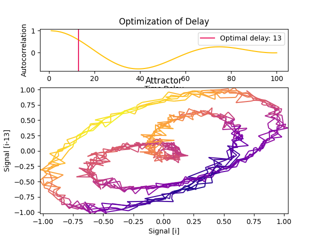
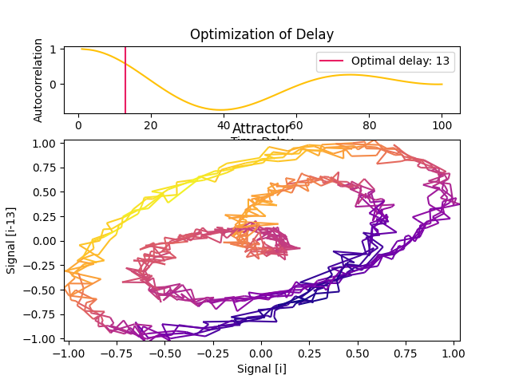
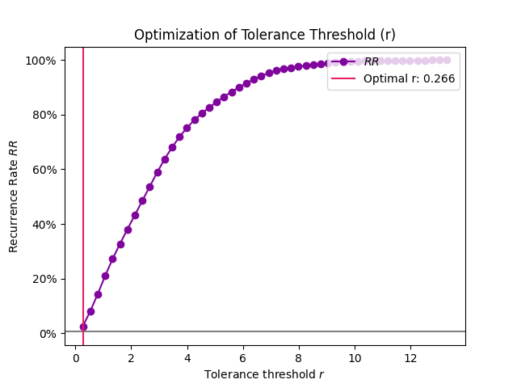
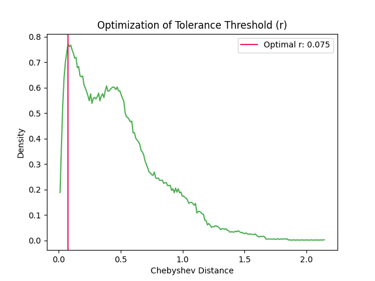
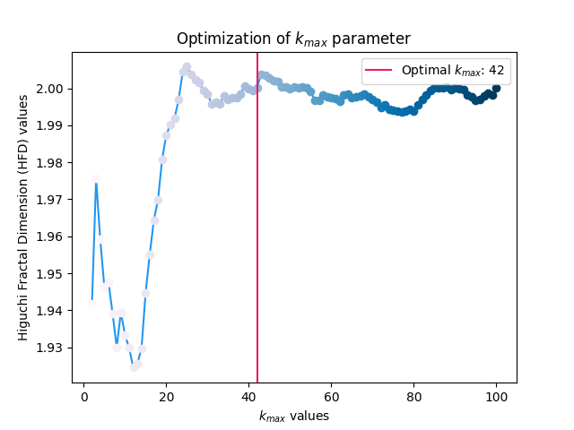
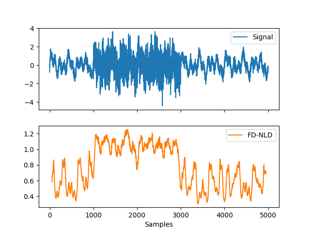
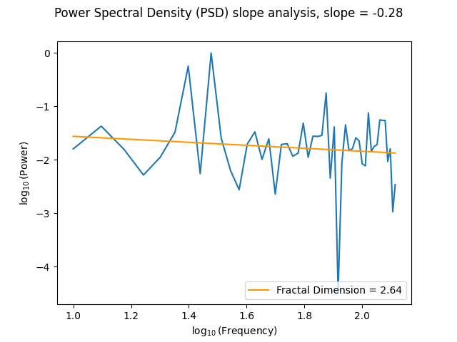
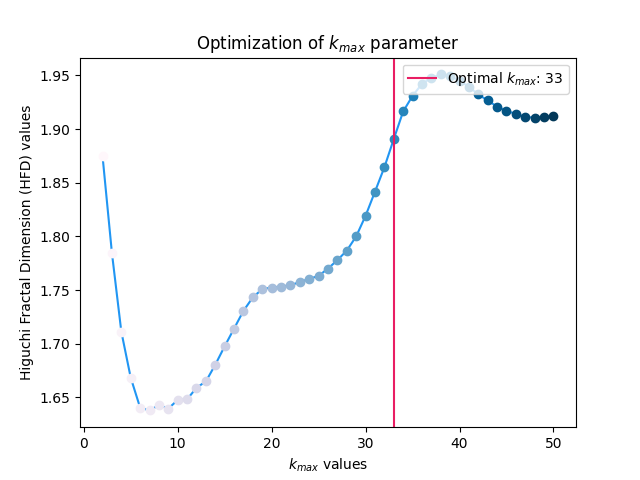
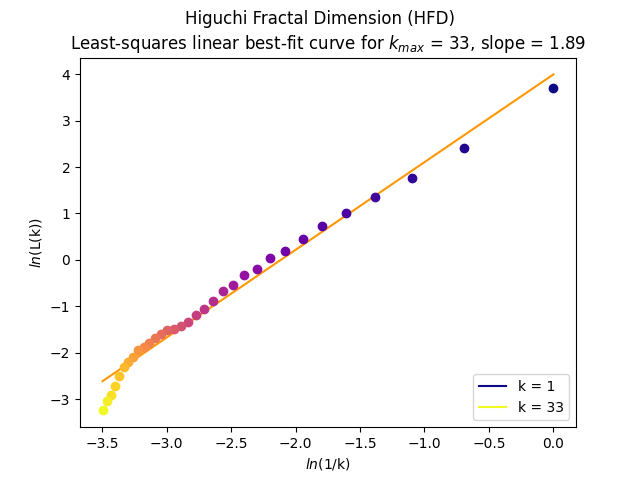

Complexity
Contents
Complexity#
Main#
complexity()#
- complexity(signal, which=['fast', 'medium'], delay=1, dimension=2, tolerance='sd', **kwargs)#
Automated Complexity and Chaos Analysis
This function can be used to compute a large number of complexity metrics and features. For more control, you can run each function separately. Note that it does not include Recurrence Quantification Analysis (RQA,
nk.complexity_rqa()) which currently requires an additional dependency.The categorization by “computation time” is based on our preliminary benchmarking study results:

- Parameters
signal (Union[list, np.array, pd.Series]) – The signal (i.e., a time series) in the form of a vector of values.
which (list) – What metrics to compute, based on their computation time. Can be
"fast","medium", or"slow".delay (int) – Time delay (often denoted Tau \(\tau\), sometimes referred to as lag) in samples. See
complexity_delay()to estimate the optimal value for this parameter.dimension (int) – Embedding Dimension (m, sometimes referred to as d or order). See
complexity_dimension()to estimate the optimal value for this parameter.tolerance (float) – Tolerance (often denoted as r), distance to consider two data points as similar. If
"sd"(default), will be set to \(0.2 * SD_{signal}\). Seecomplexity_tolerance()to estimate the optimal value for this parameter.
- Returns
df (pd.DataFrame) – A dataframe with one row containing the results for each metric as columns.
info (dict) – A dictionary containing additional information.
See also
entropy_permutation,entropy_differential,entropy_svd,fractal_katz,fractal_petrosian,fractal_sevcik,fisher_information,complexity_hjorth,complexity_rqaExamples
Example 1: Compute fast and medium-fast complexity metrics
In [1]: import neurokit2 as nk # Simulate a signal of 3 seconds In [2]: signal = nk.signal_simulate(duration=3, frequency=[5, 10]) # Fast metrics In [3]: df, info = nk.complexity(signal, which = ["fast", "medium"]) In [4]: df Out[4]: ApEn CREn DiffEn ... ShanEn SpEn WPEn 0 0.162527 0.628836 0.303891 ... 11.289246 0.094806 0.98896 [1 rows x 23 columns]
Example 2: Compute slow complexity metrics
# Slow, with specific parameters for Higuchi and MFDFA In [5]: df, info = nk.complexity(signal, which = "slow", k_max=6, q=range(-2, 2)) In [6]: df Out[6]: CD DFA FuzzyEn ... MFDFA_ExpRange RCMSEn RangeEn 0 0.83216 1.389359 0.128788 ... 0.348173 0.706035 0.188523 [1 rows x 13 columns]
Example 3: Compute complexity over time
In [7]: import numpy as np In [8]: import pandas as pd In [9]: import neurokit2 as nk # Create dynamically varying noise In [10]: amount_noise = nk.signal_simulate(duration=2, frequency=0.9) In [11]: amount_noise = nk.rescale(amount_noise, [0, 0.5]) In [12]: noise = np.random.uniform(0, 2, len(amount_noise)) * amount_noise # Add to simple signal In [13]: signal = noise + nk.signal_simulate(duration=2, frequency=5) In [14]: nk.signal_plot(signal, sampling_rate = 1000)

# Create function-wrappers that only return the index value In [15]: pfd = lambda x: nk.fractal_petrosian(x)[0] In [16]: kfd = lambda x: nk.fractal_katz(x)[0] In [17]: sfd = lambda x: nk.fractal_sevcik(x)[0] In [18]: svden = lambda x: nk.entropy_svd(x)[0] In [19]: fisher = lambda x: -1 * nk.fisher_information(x)[0] # FI is anticorrelated with complexity # Use them in a rolling window In [20]: rolling_kfd = pd.Series(signal).rolling(500, min_periods = 300, center=True).apply(kfd) In [21]: rolling_pfd = pd.Series(signal).rolling(500, min_periods = 300, center=True).apply(pfd) In [22]: rolling_sfd = pd.Series(signal).rolling(500, min_periods = 300, center=True).apply(sfd) In [23]: rolling_svden = pd.Series(signal).rolling(500, min_periods = 300, center=True).apply(svden) In [24]: rolling_fisher = pd.Series(signal).rolling(500, min_periods = 300, center=True).apply(fisher) In [25]: nk.signal_plot([signal, ....: rolling_kfd.values, ....: rolling_pfd.values, ....: rolling_sfd.values, ....: rolling_svden.values, ....: rolling_fisher], ....: labels = ["Signal", ....: "Petrosian Fractal Dimension", ....: "Katz Fractal Dimension", ....: "Sevcik Fractal Dimension", ....: "SVD Entropy", ....: "Fisher Information"], ....: sampling_rate = 1000, ....: standardize = True) ....:

Parameters Choice#
complexity_delay()#
- complexity_delay(signal, delay_max=100, method='fraser1986', algorithm=None, show=False, **kwargs)#
Automated selection of the optimal Delay (Tau)
The time delay (Tau \(\tau\), also referred to as Lag) is one of the two critical parameters (the other being the
Dimensionm) involved in the construction of the time-delay embedding of a signal. It corresponds to the delay in samples between the original signal and its delayed version(s). In other words, how many samples do we consider between a given state of the signal and its closest past state.When \(\tau\) is smaller than the optimal theoretical value, consecutive coordinates of the system’s state are correlated and the attractor is not sufficiently unfolded. Conversely, when \(\tau\) is larger than it should be, successive coordinates are almost independent, resulting in an uncorrelated and unstructured cloud of points.
Several authors suggested different methods to guide the choice of the delay:
Fraser and Swinney (1986) suggest using the first local minimum of the mutual information between the delayed and non-delayed time series, effectively identifying a value of Tau for which they share the least information.
Theiler (1990) suggested to select Tau where the autocorrelation between the signal and its lagged version at Tau first crosses the value \(1/e\).
Casdagli (1991) suggests instead taking the first zero-crossing of the autocorrelation.
Rosenstein (1993) suggests to approximate the point where the autocorrelation function drops to \((1 - 1/e)\) of its maximum value.
Rosenstein (1994) suggests to the point close to 40% of the slope of the average displacement from the diagonal (ADFD).
Kim (1999) suggests estimating Tau using the correlation integral, called the C-C method, which has shown to agree with those obtained using the Mutual Information. This method makes use of a statistic within the reconstructed phase space, rather than analyzing the temporal evolution of the time series. However, computation times are significantly long for this method due to the need to compare every unique pair of pairwise vectors within the embedded signal per delay.
Gautama (2003) mentions that in practice, it is common to have a fixed time lag and to adjust the embedding dimension accordingly. As this can lead to large m values (and thus to embedded data of a large size) and thus, slow processing, they describe an optimisation method to jointly determine m and \(\tau\) (see
complexity_optimize()).Lyle (2021) describes the “Symmetric Projection Attractor Reconstruction” (SPAR), where \(1/3\) of the the dominant frequency (i.e., of the length of the average “cycle”) can be a suitable value for approximately periodic data, and makes the attractor sensitive to morphological changes. See also Aston’s talk. This method is also the fastest but might not be suitable for aperiodic signals. The
algorithmargument (default to"fft") and will be passed as themethodargument ofsignal_psd().
- Parameters
signal (Union[list, np.array, pd.Series]) – The signal (i.e., a time series) in the form of a vector of values.
delay_max (int) – The maximum time delay (Tau or lag) to test.
method (str) – The method that defines what to compute for each tested value of Tau. Can be one of
'fraser1986','theiler1990','casdagli1991','rosenstein1993','rosenstein1994','kim1999', or'lyle2021'.algorithm (str) – The method used to find the optimal value of Tau given the values computed by the method. If None (default), will select the algorithm according to the method. Modify only if you know what you are doing.
show (bool) – If true, will plot the metric values for each value of tau.
**kwargs (optional) – Additional arguments to be passed for C-C method.
- Returns
delay (int) – Optimal time delay.
parameters (dict) – A dictionary containing additional information regarding the parameters used to compute optimal time-delay embedding.
See also
complexity,complexity_dimension,complexity_embedding,complexity_toleranceExamples
Example 1: Comparison of different methods for estimating the optimal delay of an simple artificial signal.
In [1]: import neurokit2 as nk In [2]: signal = nk.signal_simulate(duration=10, frequency=1, noise=0.01) In [3]: nk.signal_plot(signal)

In [4]: delay, parameters = nk.complexity_delay(signal, delay_max=1000, show=True, ...: method="fraser1986") ...:

In [5]: delay, parameters = nk.complexity_delay(signal, delay_max=1000, show=True, ...: method="theiler1990") ...:

In [6]: delay, parameters = nk.complexity_delay(signal, delay_max=1000, show=True, ...: method="casdagli1991") ...:
 
In [7]: delay, parameters = nk.complexity_delay(signal, delay_max=1000, show=True, ...: method="rosenstein1993") ...:
In [8]: delay, parameters = nk.complexity_delay(signal, delay_max=1000, show=True, ...: method="rosenstein1994") ...:

In [9]: delay, parameters = nk.complexity_delay(signal, delay_max=1000, show=True, ...: method="lyle2021") ...:

Example 2: Using a realistic signal.
In [10]: ecg = nk.ecg_simulate(duration=60*6, sampling_rate=200) In [11]: signal = nk.ecg_rate(nk.ecg_peaks(ecg, sampling_rate=200), ....: sampling_rate=200, ....: desired_length=len(ecg)) ....: In [12]: nk.signal_plot(signal)
In [13]: delay, parameters = nk.complexity_delay(signal, delay_max=1000, show=True)

References
Lyle, J. V., Nandi, M., & Aston, P. J. (2021). Symmetric Projection Attractor Reconstruction: Sex Differences in the ECG. Frontiers in cardiovascular medicine, 1034.
Gautama, T., Mandic, D. P., & Van Hulle, M. M. (2003, April). A differential entropy based method for determining the optimal embedding parameters of a signal. In 2003 IEEE International Conference on Acoustics, Speech, and Signal Processing, 2003. Proceedings. (ICASSP’03). (Vol. 6, pp. VI-29). IEEE.
Camplani, M., & Cannas, B. (2009). The role of the embedding dimension and time delay in time series forecasting. IFAC Proceedings Volumes, 42(7), 316-320.
Rosenstein, M. T., Collins, J. J., & De Luca, C. J. (1993). A practical method for calculating largest Lyapunov exponents from small data sets. Physica D: Nonlinear Phenomena, 65(1-2), 117-134.
Rosenstein, M. T., Collins, J. J., & De Luca, C. J. (1994). Reconstruction expansion as a geometry-based framework for choosing proper delay times. Physica-Section D, 73(1), 82-98.
Kim, H., Eykholt, R., & Salas, J. D. (1999). Nonlinear dynamics, delay times, and embedding windows. Physica D: Nonlinear Phenomena, 127(1-2), 48-60.
{kind=link}
{kind=link}
complexity_dimension()#
- complexity_dimension(signal, delay=1, dimension_max=20, method='afnn', show=False, **kwargs)#
Automated selection of the optimal Embedding Dimension (m)
The Embedding Dimension (m, sometimes referred to as d or order) is the second critical parameter (the first being the
delay\(\tau\)) involved in the construction of the time-delay embedding of a signal. It corresponds to the number of delayed states (versions of the signals lagged by \(\tau\)) that we include in the embedding.Though one can commonly find values of 2 or 3 used in practice, several authors suggested different numerical methods to guide the choice of m:
Correlation Dimension (CD): One of the earliest method to estimate the optimal m was to calculate the
correlation dimensionfor embeddings of various sizes and look for a saturation (i.e., a plateau) in its value as the embedding dimension increases. One of the limitation is that a saturation will also occur when there is not enough data to adequately fill the high-dimensional space (note that, in general, having such large embeddings that it significantly shortens the length of the signal is not recommended).FNN (False Nearest Neighbour): The method, introduced by Kennel et al. (1992), is based on the assumption that two points that are near to each other in the sufficient embedding dimension should remain close as the dimension increases. The algorithm checks the neighbours in increasing embedding dimensions until it finds only a negligible number of false neighbours when going from dimension \(m\) to \(m+1\). This corresponds to the lowest embedding dimension, which is presumed to give an unfolded space-state reconstruction. This method can fail in noisy signals due to the futile attempt of unfolding the noise (and in purely random signals, the amount of false neighbors does not substantially drops as m increases).
AFN (Average False Neighbors): This modification by Cao (1997) of the FNN method addresses one of its main drawback, the need for a heuristic choice for the tolerance thresholds
R. It uses the maximal Euclidian distance to represent nearest neighbors, and averages all ratios of the distance in \(m+1\) to \(m\) dimension and defines E1 as a parameter. The optimal dimension corresponds to when E1(d) stops changing (reaches a plateau).
- Parameters
signal (Union[list, np.array, pd.Series]) – The signal (i.e., a time series) in the form of a vector of values.
delay (int) – Time delay (often denoted Tau \(\tau\), sometimes referred to as Lag) in samples. See
complexity_delay()to choose the optimal value for this parameter.dimension_max (int) – The maximum embedding dimension to test.
method (str) – Can be
"afn"(Average False Neighbor),"fnn"(False Nearest Neighbour), or"cd"(Correlation Dimension).show (bool) – Visualize the result.
**kwargs – Other arguments, such as
R=10.0orA=2.0(relative and absolute tolerance, only for ‘fnn’ method).
- Returns
delay (int) – Time delay (often denoted ‘Tau’ \(\tau\), sometimes referred to as ‘lag’) in samples. See
complexity_delay()to choose the optimal value for this parameter.parameters (dict) – A dictionary containing additional information regarding the parameters used to compute the optimal dimension.
Examples
In [1]: import neurokit2 as nk In [2]: signal = nk.signal_simulate(duration=10, frequency=1, noise=0.01) # Find optimal delay In [3]: delay, parameters = nk.complexity_delay(signal, delay_max=500) # Find optimal dimension In [4]: optimal_dimension, info = nk.complexity_dimension(signal, ...: delay=delay, ...: dimension_max=20, ...: method='afnn', ...: show=True) ...:

In [5]: optimal_dimension, info = nk.complexity_dimension(signal, ...: delay=delay, ...: dimension_max=20, ...: method='fnn', ...: show=True) ...:

References
Kennel, M. B., Brown, R., & Abarbanel, H. D. (1992). Determining embedding dimension for phase-space reconstruction using a geometrical construction. Physical review A, 45(6), 3403.
Cao, L. (1997). Practical method for determining the minimum embedding dimension of a scalar time series. Physica D: Nonlinear Phenomena, 110(1-2), 43-50.
Rhodes, C., & Morari, M. (1997). The false nearest neighbors algorithm: An overview. Computers & Chemical Engineering, 21, S1149-S1154.
Krakovská, A., Mezeiová, K., & Budáčová, H. (2015). Use of false nearest neighbours for selecting variables and embedding parameters for state space reconstruction. Journal of Complex Systems, 2015.
Gautama, T., Mandic, D. P., & Van Hulle, M. M. (2003, April). A differential entropy based method for determining the optimal embedding parameters of a signal. In 2003 IEEE International Conference on Acoustics, Speech, and Signal Processing, 2003. Proceedings. (ICASSP’03). (Vol. 6, pp. VI-29). IEEE.
complexity_tolerance()#
- complexity_tolerance(signal, method='maxApEn', r_range=None, delay=None, dimension=None, show=False)#
Automated selection of tolerance (r)
Estimate and select the optimal tolerance (r) parameter used by other entropy and other complexity algorithms.
Many complexity algorithms are built on the notion of self-similarity and recurrence, and how often a system revisits its past states. Considering two states as identical is straightforward for discrete systems (e.g., a sequence of “A”, “B” and “C” states), but for continuous signals, we cannot simply look for when the two numbers are exactly the same. Instead, we have to pick a threshold by which to consider two points as similar.
The tolerance r is essentially this threshold value (the numerical difference between two similar points that we “tolerate”). This parameter has a critical impact and is a major source of inconsistencies in the literature.
Different methods have been described to estimate the most appropriate tolerance value:
'sd'(as in Standard Deviation): r = 0.2 * standard deviation of the signal will be returned.'adjusted_sd': Adjusted value based on the SD and the dimension. The rationale is that the chebyshev distance (used in various metrics) rises logarithmically with increasing dimension.0.5627 * np.log(dimension) + 1.3334is the logarithmic trend line for the chebyshev distance of vectors sampled from a univariate normal distribution. A constant of0.1164is used so thattolerance = 0.2 * SDsfordimension = 2(originally in https://github.com/CSchoel/nolds).'maxApEn': Different values of tolerance will be tested and the one where the approximate entropy (ApEn) is maximized will be selected and returned.'recurrence', the tolerance that yields a recurrence rate (seeRQA) close to 5% will be returned.
- Parameters
signal (Union[list, np.array, pd.Series]) – The signal (i.e., a time series) in the form of a vector of values.
method (str) – Can be
"maxApEn"(default),"sd"(or"default"), or"recurrence".r_range (Union[list, int]) – The range of tolerance values (or the number of values) to test. Only used if
methodis"maxApEn"or"recurrence". IfNone(default), the default range will be used;np.linspace(0.02, 0.8, r_range) * np.std(signal, ddof=1)for"maxApEn", andnp. linspace(0, np.max(d), 30 + 1)[1:]for"recurrence". You can set a lower number for faster results.delay (int) – Only used if
method='maxApEn'. Seeentropy_approximate().dimension (int) – Only used if
method='maxApEn'. Seeentropy_approximate().show (bool) – If true and method is ‘maxApEn’, will plot the ApEn values for each value of r.
See also
complexity,complexity_delay,complexity_dimension,complexity_embedding- Returns
float – The optimal tolerance value.
dict – A dictionary with the values of r and the corresponding ApEn values (when method=’maxApEn’).
Examples
Example 1: The method based on the SD of the signal is fast. The plot shows the d distribution of the values making the signal, and the width of the arrow represents the chosen
rparameter.
In [1]: import neurokit2 as nk # Simulate signal In [2]: signal = nk.signal_simulate(duration=2, frequency=5) # Fast method (based on the standard deviation) In [3]: r, info = nk.complexity_tolerance(signal, method = "sd", show=True)
In [4]: r Out[4]: 0.07072836242007384
The dimension can be taken into account: .. ipython:: python
# Adjusted SD @savefig p_complexity_tolerance2.png scale=100% r, info = nk.complexity_tolerance(signal, method = “adjusted_sd”, dimension=3, show=True) @suppress plt.close()
In [5]: r Out[5]: 0.07072836242007384
Example 2: The method based on the recurrence rate will display the rates according to different values of tolerance. The horizontal line indicates 5%.
In [6]: r, info = nk.complexity_tolerance(signal, delay=1, dimension=10, ...: method = 'recurrence', show=True) ...:
In [7]: r Out[7]: 0.1259621536795725
Example 3: The default method selects the tolerance at which ApEn is maximized.
# Slow method In [8]: r, info = nk.complexity_tolerance(signal, delay=8, dimension=6, ...: method = 'maxApEn', show=True) ...:
In [9]: r Out[9]: 0.014145672484014769
Example 4: The tolerance values that are tested can be modified to get a more precise estimate.
# Narrower range In [10]: r, info = nk.complexity_tolerance(signal, delay=8, dimension=6, method = 'maxApEn', ....: r_range=np.linspace(0.002, 0.8, 30), show=True) ....:
In [11]: r Out[11]: 0.6624137931034483
References
Lu, S., Chen, X., Kanters, J. K., Solomon, I. C., & Chon, K. H. (2008). Automatic selection of the threshold value r for approximate entropy. IEEE Transactions on Biomedical Engineering, 55(8), 1966-1972.
{kind=link}
{kind=link}
{kind=link}
{kind=link}
complexity_k()#
- complexity_k(signal, k_max='max', show=False)#
Automated selection of k for Higuchi Fractal Dimension (HFD)
The optimal k-max is computed based on the point at which HFD values plateau for a range of k-max values (see Vega, 2015).
- Parameters
signal (Union[list, np.array, pd.Series]) – The signal (i.e., a time series) in the form of a vector of values.
k_max (Union[int, str, list], optional) – Maximum number of interval times (should be greater than or equal to 3) to be tested. If ‘max’, it selects the maximum possible value corresponding to half the length of the signal.
show (bool) – Visualise the slope of the curve for the selected kmax value.
- Returns
k (float) – The optimal kmax of the time series.
info (dict) – A dictionary containing additional information regarding the parameters used to compute optimal kmax.
See also
Examples
In [1]: import neurokit2 as nk In [2]: signal = nk.signal_simulate(duration=2, sampling_rate=100, frequency=[5, 6], noise=0.5) In [3]: k_max, info = nk.complexity_k(signal, k_max='default', show=True)
In [4]: k_max Out[4]: 19
References
Higuchi, T. (1988). Approach to an irregular time series on the basis of the fractal theory. Physica D: Nonlinear Phenomena, 31(2), 277-283.
Vega, C. F., & Noel, J. (2015, June). Parameters analyzed of Higuchi’s fractal dimension for EEG brain signals. In 2015 Signal Processing Symposium (SPSympo) (pp. 1-5). IEEE. https:// ieeexplore.ieee.org/document/7168285
{kind=link}
Fractal Dimension#
fractal_katz()#
- fractal_katz(signal)#
Katz’s Fractal Dimension (KFD)
Computes Katz’s Fractal Dimension (KFD). The euclidean distances between successive points in the signal are summed and averaged, and the maximum distance between the starting point and any other point in the sample.
Here, fractal dimensions range from 1.0 for straight lines, through approximately 1.15 for random-walk waveforms, to approaching 1.5 for the most convoluted waveforms.
- Parameters
signal (Union[list, np.array, pd.Series]) – The signal (i.e., a time series) in the form of a vector of values.
- Returns
kfd (float) – Katz’s fractal dimension of the single time series.
info (dict) – A dictionary containing additional information (currently empty, but returned nonetheless for consistency with other functions).
Examples
Step 1. Simulate different kinds of signals
In [1]: import neurokit2 as nk In [2]: import numpy as np # Simulate straight line In [3]: straight = np.linspace(-1, 1, 2000) # Simulate random In [4]: random = nk.complexity_simulate(duration=2, method="randomwalk") In [5]: random = nk.rescale(random, [-1, 1]) # Simulate simple In [6]: simple = nk.signal_simulate(duration=2, frequency=[5, 10]) # Simulate complex In [7]: complex = nk.signal_simulate(duration=2, ...: frequency=[1, 3, 6, 12], ...: noise = 0.1) ...: In [8]: nk.signal_plot([straight, random, simple, complex])

Step 2. Compute KFD for each of them
In [9]: KFD, _ = nk.fractal_katz(straight) In [10]: KFD Out[10]: 1.0 In [11]: KFD, _ = nk.fractal_katz(random) In [12]: KFD Out[12]: 2.1583925956762395 In [13]: KFD, _ = nk.fractal_katz(simple) In [14]: KFD Out[14]: 2.0418574763920256 In [15]: KFD, _ = nk.fractal_katz(complex) In [16]: KFD Out[16]: 3.8712699570456794
References
Katz, M. J. (1988). Fractals and the analysis of waveforms. Computers in Biology and Medicine, 18(3), 145-156. doi:10.1016/0010-4825(88)90041-8.
fractal_petrosian()#
- fractal_petrosian(signal, method='C', show=False)#
Petrosian fractal dimension (PFD)
Petrosian (1995) proposed a fast method to estimate the fractal dimension by converting the signal into a binary sequence from which the fractal dimension is estimated. Several variations of the algorithm exist (e.g., ‘A’, ‘B’, ‘C’ or ‘D’), primarily differing in the way the discrete (symbolic) sequence is created (see func:complexity_symbolize for details). The most common method (‘C’, by default) binarizes the signal by the sign of consecutive differences.
\[\frac{log(N)}{log(N) + log(\frac{N}{N+0.4N_{\delta}})}\]Most of these methods assume that the signal is periodic (without a linear trend). Linear detrending might be useful to eliminate linear trends (see
signal_detrend()).See also
mutual_information,entropy_svd- Parameters
signal (Union[list, np.array, pd.Series]) – The signal (i.e., a time series) in the form of a vector of values.
method (str or int) – Method of symbolization. Can be one of
"A","B","C","D","r", anintindicating the number of bins, orNoneto skip the process (for instance, in cases when the binarization has already been done before). Seecomplexity_symbolize()for details.show (bool) – If
True, will show the discrete the signal.
- Returns
pfd (float) – The petrosian fractal dimension (PFD).
info (dict) – A dictionary containing additional information regarding the parameters used to compute PFD.
Examples
In [1]: import neurokit2 as nk In [2]: signal = nk.signal_simulate(duration=2, frequency=[5, 12]) In [3]: pfd, info = nk.fractal_petrosian(signal, method = "C", show=True)
In [4]: pfd Out[4]: 1.0012592763505226 In [5]: info Out[5]: {'Method': 'C'}
References
Petrosian, A. (1995, June). Kolmogorov complexity of finite sequences and recognition of different preictal EEG patterns. In Proceedings eighth IEEE symposium on computer-based medical systems (pp. 212-217). IEEE.
Kumar, D. K., Arjunan, S. P., & Aliahmad, B. (2017). Fractals: applications in biological Signalling and image processing. CRC Press.
Goh, C., Hamadicharef, B., Henderson, G., & Ifeachor, E. (2005, June). Comparison of fractal dimension algorithms for the computation of EEG biomarkers for dementia. In 2nd International Conference on Computational Intelligence in Medicine and Healthcare (CIMED2005).
{kind=link}
fractal_sevcik()#
- fractal_sevcik(signal)#
Sevcik Fractal Dimension (SFD)
The SFD algorithm was proposed to calculate the fractal dimension of waveforms by Sevcik (1998). This method can be used to quickly measure the complexity and randomness of a signal.
Note
Some papers (e.g., Wang et al. 2017) suggest adding
np.log(2)to the numerator, but it’s unclear why, so we sticked to the original formula for now. But if you have an idea, please let us know!- Parameters
signal (Union[list, np.array, pd.Series]) – The signal (i.e., a time series) in the form of a vector of values.
- Returns
sfd (float) – The sevcik fractal dimension.
info (dict) – An empty dictionary returned for consistency with the other complexity functions.
See also
Examples
In [1]: import neurokit2 as nk In [2]: signal = nk.signal_simulate(duration=2, frequency=5) In [3]: sfd, _ = nk.fractal_sevcik(signal) In [4]: sfd Out[4]: 1.3614382329000476
References
Sevcik, C. (2010). A procedure to estimate the fractal dimension of waveforms. arXiv preprint arXiv:1003.5266.
Kumar, D. K., Arjunan, S. P., & Aliahmad, B. (2017). Fractals: applications in biological Signalling and image processing. CRC Press.
Wang, H., Li, J., Guo, L., Dou, Z., Lin, Y., & Zhou, R. (2017). Fractal complexity-based feature extraction algorithm of communication signals. Fractals, 25(04), 1740008.
Goh, C., Hamadicharef, B., Henderson, G., & Ifeachor, E. (2005, June). Comparison of fractal dimension algorithms for the computation of EEG biomarkers for dementia. In 2nd International Conference on Computational Intelligence in Medicine and Healthcare (CIMED2005).
fractal_nld()#
- fractal_nld(signal, corrected=False)#
Fractal dimension via Normalized Length Density (NLDFD)
NLDFD is a very basic index corresponding to the average of the absolute consecutive differences of the (standardized) signal (
np.mean(np.abs(np.diff(std_signal)))). This method was developed for measuring signal complexity of very short durations (< 30 samples), and can be used for instance when continuous signal FD changes (or “running” FD) are of interest (by computing it on sliding windows, see example).For methods such as Higuchi’s FD, the standard deviation of the window FD increases sharply when the epoch becomes shorter. The NLD method results in lower standard deviation especially for shorter epochs, though at the expense of lower accuracy in average window FD.
See also
- Parameters
signal (Union[list, np.array, pd.Series]) – The signal (i.e., a time series) in the form of a vector of values.
corrected (bool) – If
True, will rescale the output value according to the power model estimated by Kalauzi et al. (2009) to make it more comparable with “true” FD range, as follows:FD = 1.9079*((NLD-0.097178)^0.18383). Note that this can result innp.nanif the result of the difference is negative.
- Returns
fd (DataFrame) – A dataframe containing the fractal dimension across epochs.
info (dict) – A dictionary containing additional information (currently, but returned nonetheless for consistency with other functions).
Examples
Example 1: Usage on a short signal
In [1]: import neurokit2 as nk # Simulate a short signal with duration of 0.5s In [2]: signal = nk.signal_simulate(duration=0.5, frequency=[3, 5]) # Compute Fractal Dimension In [3]: fd, _ = nk.fractal_nld(signal, corrected=False) In [4]: fd Out[4]: 0.023124767861850155
Example 2: Compute FD-NLD on non-overlapping windows
In [5]: import numpy as np # Simulate a long signal with duration of 5s In [6]: signal = nk.signal_simulate(duration=5, frequency=[3, 5, 10], noise=0.1) # We want windows of size=100 (0.1s) In [7]: n_windows = len(signal) // 100 # How many windows # Split signal into windows In [8]: windows = np.array_split(signal, n_windows) # Compute FD-NLD on all windows In [9]: nld = [nk.fractal_nld(i, corrected=False)[0] for i in windows] In [10]: np.mean(nld) # Get average Out[10]: 0.5902548104495962
Example 3: Calculate FD-NLD on sliding windows
# Simulate a long signal with duration of 5s In [11]: signal = nk.signal_simulate(duration=5, frequency=[3, 5, 10], noise=0.1) # Add period of noise In [12]: signal[1000:3000] = signal[1000:3000] + np.random.normal(0, 1, size=2000) # Create function-wrapper that only return the NLD value In [13]: nld = lambda x: nk.fractal_nld(x, corrected=False)[0] # Use them in a rolling window of 100 samples (0.1s) In [14]: rolling_nld = pd.Series(signal).rolling(100, min_periods = 100, center=True).apply(nld) In [15]: nk.signal_plot([signal, rolling_nld], subplots=True, labels=["Signal", "FD-NLD"])
References
Kalauzi, A., Bojić, T., & Rakić, L. (2009). Extracting complexity waveforms from one-dimensional signals. Nonlinear biomedical physics, 3(1), 1-11.
{kind=link}
fractal_psdslope()#
- fractal_psdslope(signal, method='voss1988', show=False, **kwargs)#
Fractal dimension via Power Spectral Density (PSD) slope
Fractal exponent can be computed from Power Spectral Density slope (PSDslope) analysis in signals characterized by a frequency power-law dependence.
It first transforms the time series into the frequency domain, and breaks down the signal into sine and cosine waves of a particular amplitude that together “add-up” to represent the original signal. If there is a systematic relationship between the frequencies in the signal and the power of those frequencies, this will reveal itself in log-log coordinates as a linear relationship. The slope of the best fitting line is taken as an estimate of the fractal scaling exponent and can be converted to an estimate of the fractal dimension.
A slope of 0 is consistent with white noise, and a slope of less than 0 but greater than -1, is consistent with pink noise i.e., 1/f noise. Spectral slopes as steep as -2 indicate fractional Brownian motion, the epitome of random walk processes.
- Parameters
signal (Union[list, np.array, pd.Series]) – The signal (i.e., a time series) in the form of a vector of values.
method (str) – Method to estimate the fractal dimension from the slope, can be ‘voss1988’ (default) or ‘hasselman2013’.
show (bool) – If True, returns the log-log plot of PSD versus frequency.
**kwargs – Other arguments to be passed to
signal_psd()(such as ‘method’).
- Returns
slope (float) – Estimate of the fractal dimension obtained from PSD slope analysis.
info (dict) – A dictionary containing additional information regarding the parameters used to perform PSD slope analysis.
Examples
In [1]: import neurokit2 as nk # Simulate a Signal with Laplace Noise In [2]: signal = nk.signal_simulate(duration=2, sampling_rate=200, frequency=[5, 6], noise=0.5) # Compute the Fractal Dimension from PSD slope In [3]: psdslope, info = nk.fractal_psdslope(signal, show=True)
In [4]: psdslope Out[4]: 2.71789902302337
References
https://complexity-methods.github.io/book/power-spectral-density-psd-slope.html
Hasselman, F. (2013). When the blind curve is finite: dimension estimation and model inference based on empirical waveforms. Frontiers in Physiology, 4, 75. https://doi.org/10.3389/fphys.2013.00075
Voss, R. F. (1988). Fractals in nature: From characterization to simulation. The Science of Fractal Images, 21-70.
Eke, A., Hermán, P., Kocsis, L., and Kozak, L. R. (2002). Fractal characterization of complexity in temporal physiological signals. Physiol. Meas. 23, 1-38.
{kind=link}
fractal_higuchi()#
- fractal_higuchi(signal, k_max='default', show=False, **kwargs)#
Higuchi’s Fractal Dimension (HFD)
Computes Higuchi’s Fractal Dimension (HFD) by reconstructing k-max number of new data sets. For each reconstructed data set, curve length is computed and plotted against its corresponding k value on a log-log scale. HFD equates to the slope obtained from fitting a least-squares method.
Values should fall between 1 and 2. For more information about the k parameter selection, see the
complexity_k()optimization function.- Parameters
signal (Union[list, np.array, pd.Series]) – The signal (i.e., a time series) in the form of a vector of values.
k_max (str or int) – Maximum number of interval times (should be greater than or equal to 2). If
"default", the optimal k-max is estimated usingcomplexity_k(), which is slow.show (bool) – Visualise the slope of the curve for the selected k_max value.
**kwargs (optional) – Currently not used.
- Returns
HFD (float) – Higuchi’s fractal dimension of the time series.
info (dict) – A dictionary containing additional information regarding the parameters used to compute Higuchi’s fractal dimension.
See also
Examples
 In [1]: import neurokit2 as nk In [2]: signal = nk.signal_simulate(duration=1, sampling_rate=100, frequency=[3, 6], noise = 0.2) In [3]: k_max, info = nk.complexity_k(signal, k_max='default', show=True) In [4]: hfd, info = nk.fractal_higuchi(signal, k_max=k_max, show=True)
In [5]: hfd Out[5]: 1.9523315727821446
References
Higuchi, T. (1988). Approach to an irregular time series on the basis of the fractal theory. Physica D: Nonlinear Phenomena, 31(2), 277-283.
Vega, C. F., & Noel, J. (2015, June). Parameters analyzed of Higuchi’s fractal dimension for EEG brain signals. In 2015 Signal Processing Symposium (SPSympo) (pp. 1-5). IEEE. https://ieeexplore.ieee.org/document/7168285
{kind=link}
{kind=link}
fractal_correlation()#
- fractal_correlation(signal, delay=1, dimension=2, radius=64, show=False, **kwargs)#
Correlation Dimension (CD)
The Correlation Dimension (CD, also denoted D2) is a lower bound estimate of the fractal dimension of a signal.
The time series is first
time-delay embedded, and distances between all points in the trajectory are calculated. The “correlation sum” is the computed, which is the proportion of pairs of points which distance is smaller than a given radius. The final correlation dimension is then approximated by a log-log graph of correlation sum vs. a sequence of radiuses.This function can be called either via
fractal_correlation()orcomplexity_cd().- Parameters
signal (Union[list, np.array, pd.Series]) – The signal (i.e., a time series) in the form of a vector of values.
delay (int) – Time delay (often denoted Tau \(\tau\), sometimes referred to as lag) in samples. See
complexity_delay()to estimate the optimal value for this parameter.dimension (int) – Embedding Dimension (m, sometimes referred to as d or order). See
complexity_dimension()to estimate the optimal value for this parameter.radius (Union[str, int, list]) – The sequence of radiuses to test. If an integer is passed, will get an exponential sequence of length
radiusranging from 2.5% to 50% of the distance range. Methods implemented in other packages can be used via settingr='nolds',r='Corr_Dim'orr='boon2008'.show (bool) – Plot of correlation dimension if True. Defaults to False.
**kwargs – Other arguments to be passed (not used for now).
- Returns
cd (float) – The Correlation Dimension (CD) of the time series.
info (dict) – A dictionary containing additional information regarding the parameters used to compute the correlation dimension.
Examples
In [1]: import neurokit2 as nk In [2]: signal = nk.signal_simulate(duration=2, frequency=[5, 7]) In [3]: cd, info = nk.fractal_correlation(signal, radius=32, show=True) In [4]: cd, info = nk.fractal_correlation(signal, radius="nolds", show=True) In [5]: cd, info = nk.fractal_correlation(signal, radius='boon2008', show=True)


References
Bolea, J., Laguna, P., Remartínez, J. M., Rovira, E., Navarro, A., & Bailón, R. (2014). Methodological framework for estimating the correlation dimension in HRV signals. Computational and mathematical methods in medicine, 2014.
Boon, M. Y., Henry, B. I., Suttle, C. M., & Dain, S. J. (2008). The correlation dimension: A useful objective measure of the transient visual evoked potential?. Journal of vision, 8(1), 6-6.
Entropy#
entropy_shannon()#
- entropy_shannon(signal=None, base=2, method=None, show=False, freq=None, **kwargs)#
Shannon entropy (SE or ShanEn)
Compute Shannon entropy (SE). Entropy is a measure of unpredictability of the state, or equivalently, of its average information content. Shannon entropy (SE) is one of the first and most basic measure of entropy and a foundational concept of information theory, introduced by Shannon (1948) to quantify the amount of information in a variable.
\[ShanEn = -\sum_{x \in \mathcal{X}} p(x) \log_2 p(x)\]Shannon attempted to extend Shannon entropy in what has become known as Differential Entropy (see :func`entropy_differential`).
Because Shannon entropy was meant for symbolic sequences (discrete events such as [“A”, “B”, “B”, “A”]), it does not do well with continuous signals. One option is to binarize (i.e., cut) the signal into a number of bins using for instance
pd.cut(signal, bins=100, labels=False). This can be done automatically using themethodargument, which will be transferred to : func:complexity_symbolize.This function can be called either via
entropy_shannon()orcomplexity_se().- Parameters
signal (Union[list, np.array, pd.Series]) – The signal (i.e., a time series) in the form of a vector of values.
base (float) – The logarithmic base to use, defaults to
2. Note thatscipy.stats.entropy()usesnp.eas default (the natural logarithm).method (str or int) – Method of symbolization. Can be one of
"A","B","C","D","r", anintindicating the number of bins, orNoneto skip the process (for instance, in cases when the binarization has already been done before). Seecomplexity_symbolize()for details.show (bool) – If
True, will show the discrete the signal.freq (np.array) – Instead of a signal, a vector of probabilities can be provided (used for instance in
entropy_permutation()).**kwargs – Optional arguments. Not used for now.
- Returns
shanen (float) – The Shannon entropy of the signal.
info (dict) – A dictionary containing additional information regarding the parameters used to compute Shannon entropy.
See also
entropy_differential,entropy_cumulative_residual,entropy_tsallis,entropy_renyiExamples
In [1]: import neurokit2 as nk In [2]: signal = [1, 1, 5, 5, 2, 8, 1] In [3]: _, freq = np.unique(signal, return_counts=True) In [4]: nk.entropy_shannon(freq=freq) Out[4]: (1.8423709931771086, {'Method': None, 'Base': 2})
# Simulate a Signal with Laplace Noise In [5]: signal = nk.signal_simulate(duration=2, frequency=5, noise=0.01) # Compute Shannon's Entropy In [6]: shanen, info = nk.entropy_shannon(signal, method=3, show=True)

In [7]: shanen Out[7]: 1.5516261099706012
Compare with
scipy(using the same base).In [8]: import scipy.stats # Make the binning ourselves In [9]: binned = pd.cut(signal, bins=3, labels=False) In [10]: scipy.stats.entropy(pd.Series(binned).value_counts()) Out[10]: 1.075505263409318 In [11]: shanen, info = nk.entropy_shannon(binned, base=np.e) In [12]: shanen Out[12]: 1.0755052634093178
References
Shannon, C. E. (1948). A mathematical theory of communication. The Bell system technical journal, 27(3), 379-423.
entropy_differential()#
- entropy_differential(signal, **kwargs)#
Differential entropy (DiffEn)
Differential entropy (DiffEn; also referred to as continuous entropy) started as an attempt by Shannon to extend Shannon entropy. However, differential entropy presents some issues too, such as that it can be negative even for simple distributions (such as the uniform distribution).
This function can be called either via
entropy_differential()orcomplexity_diffen().- Parameters
signal (Union[list, np.array, pd.Series]) – The signal (i.e., a time series) in the form of a vector of values.
**kwargs (optional) – Other arguments passed to
scipy.stats.differential_entropy().
- Returns
diffen (float) – The Differential entropy of the signal.
info (dict) – A dictionary containing additional information regarding the parameters used to compute Differential entropy.
See also
entropy_shannon,entropy_cumulative_residualExamples
In [1]: import neurokit2 as nk # Simulate a Signal with Laplace Noise In [2]: signal = nk.signal_simulate(duration=2, frequency=5, noise=0.1) # Compute Differential Entropy In [3]: diffen, info = nk.entropy_differential(signal) In [4]: diffen Out[4]: 0.3771342215426443
References
entropy_tsallis()#
- entropy_tsallis(signal=None, q=1, method=None, show=False, freq=None, **kwargs)#
Tsallis entropy (TSEn)
Tsallis Entropy is an extension of
Shannon entropyto the case where entropy is nonextensive. It is similarly computed from a vector of probabilities of different states. Because it works on discrete inputs (e.g., [A, B, B, A, B]), it requires to transform the continuous signal into a discrete one.\[TSEn = \frac{1}{q - 1} \left( 1 - \sum_{x \in \mathcal{X}} p(x)^q \right)\]- Parameters
signal (Union[list, np.array, pd.Series]) – The signal (i.e., a time series) in the form of a vector of values.
q (float) – Tsallis’s q parameter, sometimes referred to as the entropic-index (default to 1).
method (str or int) – Method of discretization. Can be one of
"A","B","C","D","r", anintindicating the number of bins, orNoneto skip the process (for instance, in cases when the binarization has already been done before). Seefractal_petrosian()for details.show (bool) – If
True, will show the discrete the signal.freq (np.array) – Instead of a signal, a vector of probabilities can be provided.
**kwargs – Optional arguments. Not used for now.
- Returns
tsen (float) – The Tsallis entropy of the signal.
info (dict) – A dictionary containing additional information regarding the parameters used.
See also
Examples
In [1]: import neurokit2 as nk In [2]: signal = [1, 3, 3, 2, 6, 6, 6, 1, 0] In [3]: tsen, _ = nk.entropy_tsallis(signal, q=1) In [4]: tsen Out[4]: 1.5229550675313184 In [5]: shanen, _ = nk.entropy_shannon(signal, base=np.e) In [6]: shanen Out[6]: 1.5229550675313184
References
Tsallis, C. (2009). Introduction to nonextensive statistical mechanics: approaching a complex world. Springer, 1(1), 2-1.
entropy_renyi()#
- entropy_renyi(signal=None, alpha=1, method=None, show=False, freq=None, **kwargs)#
Rényi entropy (REn or H)
In information theory, the Rényi entropy H generalizes the Hartley entropy, the Shannon entropy, the collision entropy and the min-entropy.
\(\alpha = 0\): the Rényi entropy becomes what is known as the Hartley entropy.
\(\alpha = 1\): the Rényi entropy becomes the :func:`Shannon entropy <entropy_shannon>`.
\(\alpha = 2\): the Rényi entropy becomes the collision entropy, which corresponds to the surprisal of “rolling doubles”.
It is mathematically defined as:
\[REn = \frac{1}{1-\alpha} \log_2 \left( \sum_{x \in \mathcal{X}} p(x)^\alpha \right)\]- Parameters
signal (Union[list, np.array, pd.Series]) – The signal (i.e., a time series) in the form of a vector of values.
alpha (float) – The alpha \(\alpha\) parameter (default to 1) for Rényi entropy.
method (str or int) – Method of discretization. Can be one of
"A","B","C","D","r", anintindicating the number of bins, orNoneto skip the process (for instance, in cases when the binarization has already been done before). Seefractal_petrosian()for details.show (bool) – If
True, will show the discrete the signal.freq (np.array) – Instead of a signal, a vector of probabilities can be provided.
**kwargs – Optional arguments. Not used for now.
- Returns
ren (float) – The Tsallis entropy of the signal.
info (dict) – A dictionary containing additional information regarding the parameters used.
See also
Examples
In [1]: import neurokit2 as nk In [2]: signal = [1, 3, 3, 2, 6, 6, 6, 1, 0] In [3]: tsen, _ = nk.entropy_renyi(signal, alpha=1) In [4]: tsen Out[4]: 1.5229550675313184 In [5]: shanen, _ = nk.entropy_shannon(signal, base=np.e) In [6]: shanen Out[6]: 1.5229550675313184 # Hartley Entropy In [7]: nk.entropy_renyi(signal, alpha=0)[0] Out[7]: 1.6094379124341003 # Collision Entropy In [8]: nk.entropy_renyi(signal, alpha=2)[0] Out[8]: 1.4500101755059984
References
Rényi, A. (1961, January). On measures of entropy and information. In Proceedings of the Fourth Berkeley Symposium on Mathematical Statistics and Probability, Volume 1: Contributions to the Theory of Statistics (Vol. 4, pp. 547-562). University of California Press.
entropy_cumulativeresidual()#
- entropy_cumulativeresidual(signal, method=None, show=False, freq=None)#
Cumulative residual entropy (CREn)
The cumulative residual entropy is an alternative to the Shannon differential entropy with several advantageous properties, such as non-negativity. The key idea is to use the cumulative distribution (CDF) instead of the density function in Shannon’s entropy.
\[CREn = -\int_{0}^{\infty} p(|X| > x) \log_{2} p(|X| > x) dx\]Similarly to
Shannon entropyandPetrosian fractal dimension, different methods to transform continuous signals into discrete ones are available. Seecomplexity_symbolize()for details.This function can be called either via
entropy_cumulativeresidual()orcomplexity_cren().- Parameters
signal (Union[list, np.array, pd.Series]) – The signal (i.e., a time series) in the form of a vector of values.
method (str or int) – Method of symbolization. Can be one of
"A","B","C","D","r", anintindicating the number of bins, orNoneto skip the process (for instance, in cases when the binarization has already been done before). Seecomplexity_symbolize()for details.show (bool) – If
True, will show the discrete the signal.freq (np.array) – Instead of a signal, a vector of probabilities can be provided.
- Returns
CREn (float) – The cumulative residual entropy.
info (dict) – A dictionary containing ‘Values’ for each pair of events.
Examples
In [1]: import neurokit2 as nk In [2]: signal = [1, 1, 1, 3, 3, 2, 2] In [3]: cren, info = nk.entropy_cumulativeresidual(signal, show=True)

In [4]: cren Out[4]: 0.8706159142657933
References
Rao, M., Chen, Y., Vemuri, B. C., & Wang, F. (2004). Cumulative residual entropy: a new measure of information. IEEE transactions on Information Theory, 50(6), 1220-1228.
entropy_svd()#
- entropy_svd(signal, delay=1, dimension=2)#
Singular Value Decomposition (SVD) Entropy
SVD entropy (SVDEn) can be intuitively seen as an indicator of how many eigenvectors are needed for an adequate explanation of the dataset. In other words, it measures feature-richness: the higher the SVD entropy, the more orthogonal vectors are required to adequately explain the space-state. Similarly to
Fisher Information (FI), it is based on the Singular Value Decomposition of thetime-delay embeddedsignal.See also
information_fisher,complexity_embedding,complexity_delay,complexity_dimension- Parameters
signal (Union[list, np.array, pd.Series]) – The signal (i.e., a time series) in the form of a vector of values.
delay (int) – Time delay (often denoted Tau \(\tau\), sometimes referred to as lag) in samples. See
complexity_delay()to estimate the optimal value for this parameter.dimension (int) – Embedding Dimension (m, sometimes referred to as d or order). See
complexity_dimension()to estimate the optimal value for this parameter.
- Returns
svd (float) – The singular value decomposition (SVD).
info (dict) – A dictionary containing additional information regarding the parameters used to compute SVDEn.
Examples
In [1]: import neurokit2 as nk In [2]: signal = nk.signal_simulate(duration=1, frequency=5) In [3]: svden, info = nk.entropy_svd(signal, delay=5, dimension=3) In [4]: svden Out[4]: 0.5091667337544503
entropy_spectral()#
- entropy_spectral(signal, c=None, **kwargs)#
Spectral Entropy (SpEn)
Spectral entropy (SE or SpEn) treats the signal’s normalized power distribution in the frequency domain as a probability distribution, and calculates the Shannon entropy of it.
A signal with a single frequency component (i.e., pure sinusoid) produces the smallest entropy. On the other hand, a signal with all frequency components of equal power value (white noise) produces the greatest entropy.
- Parameters
signal (Union[list, np.array, pd.Series]) – The signal (i.e., a time series) in the form of a vector of values.
c (int) – Number of bins of frequency.
**kwargs (optional) – Keyword arguments to be passed to signal_psd().
- Returns
SpEn (float) – Spectral Entropy
info (dict) – A dictionary containing additional information regarding the parameters used.
See also
entropy_shannon,entropy_wiener,signal_psdExamples
In [1]: import neurokit2 as nk # Simulate a Signal with Laplace Noise In [2]: signal = nk.signal_simulate(duration=2, sampling_rate=200, frequency=[5, 6, 10], noise=0.1) # Compute Spectral Entropy In [3]: SpEn, info = nk.entropy_spectral(signal, c=20) In [4]: SpEn Out[4]: 0.3669782669696597
References
Crepeau, J. C., & Isaacson, L. K. (1991). Spectral Entropy Measurements of Coherent Structures in an Evolving Shear Layer. Journal of Non-Equilibrium Thermodynamics, 16(2). doi:10.1515/jnet.1991.16.2.137
entropy_phase()#
- entropy_phase(signal, delay=1, n=4, show=False, **kwargs)#
Phase Entropy (PhasEn)
Phase entropy (PhasEn or PhEn) has been developed by quantifying the distribution of the signal in accross n parts (a parameter also denoted k) of a two-dimensional phase space referred to as a second order difference plot (SODP). It build on the concept of
Grid Entropy, that usesPoincaré plotas its basis.
- Parameters
signal (Union[list, np.array, pd.Series]) – The signal (i.e., a time series) in the form of a vector of values.
delay (int) – Time delay (often denoted Tau \(\tau\), sometimes referred to as lag) in samples. See
complexity_delay()to estimate the optimal value for this parameter.n (int) – The number of sections that the SODP is divided into, often denoted k. It is a coarse graining parameter that defines how fine the grid is. It is recommended to use even-numbered (preferably multiples of 4) partitions for sake of symmetry.
show (bool) – Plot the Second Order Difference Plot (SODP).
**kwargs (optional) – Other keyword arguments, such as the logarithmic
baseto use forentropy_shannon().
- Returns
phasen (float) – Phase Entropy
info (dict) – A dictionary containing additional information regarding the parameters used.
See also
Examples
In [1]: import neurokit2 as nk # Simulate a Signal In [2]: signal = nk.signal_simulate(duration=2, sampling_rate=200, frequency=[5, 6], noise=0.5) # Compute Phase Entropy In [3]: phasen, info = nk.entropy_phase(signal, n=4, show=True)

In [4]: phasen Out[4]: 1.1375696959060588 In [5]: phasen, info = nk.entropy_phase(signal, n=8, show=True)

References
Rohila, A., & Sharma, A. (2019). Phase entropy: A new complexity measure for heart rate variability. Physiological Measurement, 40(10), 105006.
entropy_grid()#
- entropy_grid(signal, delay=1, n=3, show=False, **kwargs)#
Grid Entropy (GridEn)
Grid Entropy (GridEn or GDEn) is defined as a gridded descriptor of a
Poincaré plot, which is a two-dimensional phase space diagram of a time series that plots the present sample of a time series with respect to their delayed values. The plot is divided into \(n*n\) grids, and theShannon entropyis computed from the probability distribution of the number of points in each grid.Yan et al. (2019) define two novel measures, namely GridEn and Gridded Distribution Rate (GDR), the latter being the percentage of grids containing points.
- Parameters
signal (Union[list, np.array, pd.Series]) – The signal (i.e., a time series) in the form of a vector of values.
delay (int) – Time delay (often denoted Tau \(\tau\), sometimes referred to as lag) in samples. See
complexity_delay()to estimate the optimal value for this parameter.n (int) – The number of sections that the Poincaré plot is divided into. It is a coarse graining parameter that defines how fine the grid is.
show (bool) – Plot the Poincaré plot.
**kwargs (optional) – Other keyword arguments, such as the logarithmic
baseto use forentropy_shannon().
- Returns
griden (float) – Grid Entropy of the signal.
info (dict) – A dictionary containing additional information regarding the parameters used.
See also
Examples
In [1]: import neurokit2 as nk # Simulate a Signal In [2]: signal = nk.signal_simulate(duration=2, sampling_rate=200, frequency=[5, 6], noise=0.5) # Compute Grid Entropy In [3]: phasen, info = nk.entropy_grid(signal, n=3, show=True)

In [4]: phasen Out[4]: 2.5933410185542973 In [5]: phasen, info = nk.entropy_grid(signal, n=10, show=True)

In [6]: info["GDR"] Out[6]: 0.79
References
Yan, C., Li, P., Liu, C., Wang, X., Yin, C., & Yao, L. (2019). Novel gridded descriptors of poincaré plot for analyzing heartbeat interval time-series. Computers in biology and medicine, 109, 280-289.
entropy_attention()#
- entropy_attention(signal)#
Attention Entropy (AttEn)
Yang et al. (2020) propose a conceptually new approach called Attention Entropy (AttEn), which pays attention only to the key observations. Instead of counting the frequency of all observations, it analyzes the frequency distribution of the intervals between the key observations in a time-series. The advantages of the attention entropy are that it does not need any parameter to tune, is robust to the time-series length, and requires only linear time to compute.
- Parameters
signal (Union[list, np.array, pd.Series]) – The signal (i.e., a time series) in the form of a vector of values.
- Returns
atten (float) – The attention entropy of the signal.
info (dict) – A dictionary containing values of sub-entropies that are averaged to give the general AttEn, such as
MaxMax(entropy of local-maxima intervals),MinMin(entropy of local-minima intervals),MaxMin(entropy of intervals between local maxima and subsequent minima), andMinMax(entropy of intervals between local minima and subsequent maxima ).
See also
entropy_shannon,entropy_cumulative_residualExamples
In [1]: import neurokit2 as nk In [2]: signal = nk.signal_simulate(duration=2, frequency=5, noise=0.1) # Compute Attention Entropy In [3]: atten, info = nk.entropy_attention(signal) In [4]: atten Out[4]: 1.1248074824440113
References
Yang, J., Choudhary, G. I., Rahardja, S., & Franti, P. (2020). Classification of interbeat interval time-series using attention entropy. IEEE Transactions on Affective Computing.
entropy_increment()#
- entropy_increment(signal, dimension=2, q=4, **kwargs)#
Increment Entropy (IncrEn) and its Multiscale variant (MSIncrEn)
Increment Entropy (IncrEn) quantifies the magnitudes of the variations between adjacent elements into ranks based on a precision factor q and the standard deviation of the time series. IncrEn is conceptually similar to
permutation entropyin that it also uses the concepts of symbolic dynamics.In the IncrEn calculation, two letters are used to describe the relationship between adjacent elements in a time series. One letter represents the volatility direction, and the other represents the magnitude of the variation between the adjacent elements.
The time series is reconstructed into vectors of m elements. Each element of each vector represents the increment between two neighbouring elements in the original time series. Each increment element is mapped to a word consisting of two letters (one letter represents the volatility direction, and the other represents the magnitude of the variation between the adjacent elements), and then, each vector is described as a symbolic (discrete) pattern. The
Shannon entropyof the probabilities of independent patterns is then computed.- Parameters
signal (Union[list, np.array, pd.Series]) – The signal (i.e., a time series) in the form of a vector of values.
dimension (int) – Embedding Dimension (m, sometimes referred to as d or order). See
complexity_dimension()to estimate the optimal value for this parameter.q (float) – The quantifying resolution q represents the precision of IncrEn, with larger values indicating a higher precision, causing IncrEn to be more sensitive to subtle fluctuations. The IncrEn value increases with increasing q, until reaching a plateau. This property can be useful to selecting an optimal q value.
**kwargs (optional) – Other keyword arguments, such as the logarithmic
baseto use forentropy_shannon().
- Returns
incren (float) – The Increment Entropy of the signal.
info (dict) – A dictionary containing additional information regarding the parameters used, such as the average entropy
AvEn.
See also
Examples
In [1]: import neurokit2 as nk # Simulate a Signal In [2]: signal = nk.signal_simulate(duration=2, sampling_rate=200, frequency=[5, 6], noise=0.5) # IncrEn In [3]: incren, _ = nk.entropy_increment(signal, dimension=3, q=2) In [4]: incren Out[4]: 2.7527561966766747 # Multiscale IncrEn (MSIncrEn) In [5]: msincren, _ = nk.entropy_multiscale(signal, method="MSIncrEn", show=True)

References
Liu, X., Jiang, A., Xu, N., & Xue, J. (2016). Increment entropy as a measure of complexity for time series. Entropy, 18(1), 22.
Liu, X., Jiang, A., Xu, N., & Xue, J. (2016). Correction on Liu, X.; Jiang, A.; Xu, N.; Xue, J. Increment Entropy as a Measure of Complexity for Time Series. Entropy 2016, 18, 22. Entropy, 18(4), 133.
Liu, X., Wang, X., Zhou, X., & Jiang, A. (2018). Appropriate use of the increment entropy for electrophysiological time series. Computers in Biology and Medicine, 95, 13-23.
entropy_slope()#
- entropy_slope(signal, dimension=3, thresholds=[0.1, 45], **kwargs)#
Slope Entropy (SlopEn)
Slope Entropy (SlopEn) uses an alphabet of three symbols, 0, 1, and 2, with positive (+) and negative versions (-) of the last two. Each symbol covers a range of slopes for the segment joining two consecutive samples of the input data, and the
Shannon entropyof the relative frequency of each pattern is computed.
- Parameters
signal (Union[list, np.array, pd.Series]) – The signal (i.e., a time series) in the form of a vector of values.
dimension (int) – Embedding Dimension (m, sometimes referred to as d or order). See
complexity_dimension()to estimate the optimal value for this parameter.thresholds (list) – Angular thresholds (called levels). A list of monotonically increasing values in the range [0, 90] degrees.
**kwargs (optional) – Other keyword arguments, such as the logarithmic
baseto use forentropy_shannon().
- Returns
slopen (float) – Slope Entropy of the signal.
info (dict) – A dictionary containing additional information regarding the parameters used.
See also
Examples
In [1]: import neurokit2 as nk # Simulate a Signal In [2]: signal = nk.signal_simulate(duration=2, sampling_rate=200, frequency=[5, 6], noise=0.5) # Compute Slope Entropy In [3]: slopen, info = nk.entropy_slope(signal, dimension=3, thresholds=[0.1, 45]) In [4]: slopen Out[4]: 3.784042307359139 In [5]: slopen, info = nk.entropy_slope(signal, dimension=3, thresholds=[5, 45, 60]) In [6]: slopen Out[6]: 5.042714672870506 # Compute Multiscale Slope Entropy (MSSlopEn) In [7]: msslopen, info = nk.entropy_multiscale(signal, method="MSSlopEn", show=True)

References
Cuesta-Frau, D. (2019). Slope entropy: A new time series complexity estimator based on both symbolic patterns and amplitude information. Entropy, 21(12), 1167.
entropy_symbolicdynamic()#
- entropy_symbolicdynamic(signal, dimension=3, c=6, method='MEP', **kwargs)#
Symbolic Dynamic Entropy (SyDyEn) and its Multiscale variants (MSSyDyEn)
Symbolic Dynamic Entropy (SyDyEn) combines the merits of symbolic dynamic and information theory.
- Parameters
signal (Union[list, np.array, pd.Series]) – The signal (i.e., a time series) in the form of a vector of values.
dimension (int) – Embedding Dimension (m, sometimes referred to as d or order). See
complexity_dimension()to estimate the optimal value for this parameter.c (int) – Number of symbols c.
method (str) – Method of symbolization. Can be one of
"MEP"(default),"NCDF","linear","uniform","kmeans","equal", or others. Seecomplexity_symbolize()for details.**kwargs (optional) – Other keyword arguments (currently not used).
- Returns
SyDyEn (float) – Symbolic Dynamic Entropy (SyDyEn) of the signal.
info (dict) – A dictionary containing additional information regarding the parameters used.
See also
Examples
In [1]: import neurokit2 as nk # Simulate a Signal In [2]: signal = nk.signal_simulate(duration=2, sampling_rate=200, frequency=[5, 6], noise=0.5) # Compute Symbolic Dynamic Entropy In [3]: sydyen, info = nk.entropy_symbolicdynamic(signal, c=3, method="MEP") In [4]: sydyen Out[4]: 3.683507971234752 In [5]: sydyen, info = nk.entropy_symbolicdynamic(signal, c=3, method="kmeans") In [6]: sydyen Out[6]: 3.290420062892821 # Compute Multiscale Symbolic Dynamic Entropy (MSSyDyEn) In [7]: mssydyen, info = nk.entropy_multiscale(signal, method="MSSyDyEn", show=True) # Compute Modified Multiscale Symbolic Dynamic Entropy (MMSyDyEn) In [8]: mmsydyen, info = nk.entropy_multiscale(signal, method="MMSyDyEn", show=True)


References
Li, Y., Yang, Y., Li, G., Xu, M., & Huang, W. (2017). A fault diagnosis scheme for planetary gearboxes using modified multi-scale symbolic dynamic entropy and mRMR feature selection. Mechanical Systems and Signal Processing, 91, 295-312.
Rajagopalan, V., & Ray, A. (2006). Symbolic time series analysis via wavelet-based partitioning. Signal processing, 86(11), 3309-3320.
entropy_dispersion()#
- entropy_dispersion(signal, delay=1, dimension=3, c=6, method='NCDF', fluctuation=False, rho=1, **kwargs)#
Dispersion Entropy (DispEn)
The Dispersion Entropy (DispEn). Also returns the Reverse Dispersion Entropy (RDEn).
- Parameters
signal (Union[list, np.array, pd.Series]) – The signal (i.e., a time series) in the form of a vector of values.
delay (int) – Time delay (often denoted Tau \(\tau\), sometimes referred to as lag) in samples. See
complexity_delay()to estimate the optimal value for this parameter.dimension (int) – Embedding Dimension (m, sometimes referred to as d or order). See
complexity_dimension()to estimate the optimal value for this parameter.c (int) – Number of symbols c. Rostaghi (2016) recommend in practice a c between 4 and 8.
method (str) – Method of symbolization. Can be one of
"NCDF"(default),"finesort", or others. Seecomplexity_symbolize()for details.fluctuation (bool) – Fluctuation-based Dispersion entropy.
rho (float) – Tuning parameter of “finesort”. Only when
method="finesort".**kwargs (optional) – Other keyword arguments (currently not used).
- Returns
DispEn (float) – Dispersion Entropy (DispEn) of the signal.
info (dict) – A dictionary containing additional information regarding the parameters used.
Examples
In [1]: import neurokit2 as nk # Simulate a Signal In [2]: signal = nk.signal_simulate(duration=2, sampling_rate=200, frequency=[5, 6], noise=0.5) # Compute Dispersion Entropy (DispEn) In [3]: dispen, info = nk.entropy_dispersion(signal, c=3) In [4]: dispen Out[4]: 1.4127157719605257 # Get Reverse Dispersion Entropy (RDEn) In [5]: info["RDEn"] Out[5]: 0.005029496147144691 # Fluctuation-based DispEn with "finesort" In [6]: dispen, info = nk.entropy_dispersion(signal, c=3, method="finesort", fluctuation=True) In [7]: dispen Out[7]: 1.4127157719605257
References
Rostaghi, M., & Azami, H. (2016). Dispersion entropy: A measure for time-series analysis. IEEE Signal Processing Letters, 23(5), 610-614.
entropy_ofentropy()#
- entropy_ofentropy(signal, scale=10, bins=10, **kwargs)#
Entropy of entropy (EnofEn)
Entropy of entropy (EnofEn or EoE) combines the features of
MSEwith an alternate measure of information, called superinformation, used in DNA sequencing.- Parameters
signal (Union[list, np.array, pd.Series]) – The signal (i.e., a time series) in the form of a vector of values.
scale (int) – The size of the windows that the signal is divided into. Also referred to as Tau \(\tau\), it represents the scale factor and corresponds to the amount of coarsegraining.
bins (int) – The number of equal-size bins to divide the signal’s range in.
**kwargs (optional) – Other keyword arguments, such as the logarithmic
baseto use forentropy_shannon().
- Returns
enofen (float) – The Entropy of entropy of the signal.
info (dict) – A dictionary containing additional information regarding the parameters used, such as the average entropy
AvEn.
See also
Examples
In [1]: import neurokit2 as nk # Simulate a Signal In [2]: signal = nk.signal_simulate(duration=2, sampling_rate=200, frequency=[5, 6], noise=0.5) # EnofEn In [3]: enofen, _ = nk.entropy_ofentropy(signal, scale=10, bins=10) In [4]: enofen Out[4]: 3.733783409004101
References
Hsu, C. F., Wei, S. Y., Huang, H. P., Hsu, L., Chi, S., & Peng, C. K. (2017). Entropy of entropy: Measurement of dynamical complexity for biological systems. Entropy, 19(10), 550.
entropy_approximate()#
- entropy_approximate(signal, delay=1, dimension=2, tolerance='sd', corrected=False, **kwargs)#
Approximate entropy (ApEn) and its corrected version (cApEn)
Approximate entropy is a technique used to quantify the amount of regularity and the unpredictability of fluctuations over time-series data. The advantages of ApEn include lower computational demand (ApEn can be designed to work for small data samples (< 50 data points) and can be applied in real time) and less sensitive to noise. However, ApEn is heavily dependent on the record length and lacks relative consistency.
This function can be called either via
entropy_approximate()orcomplexity_apen(), and the corrected version viacomplexity_capen().- Parameters
signal (Union[list, np.array, pd.Series]) – The signal (i.e., a time series) in the form of a vector of values.
delay (int) – Time delay (often denoted Tau \(\tau\), sometimes referred to as lag) in samples. See
complexity_delay()to estimate the optimal value for this parameter.dimension (int) – Embedding Dimension (m, sometimes referred to as d or order). See
complexity_dimension()to estimate the optimal value for this parameter.tolerance (float) – Tolerance (often denoted as r), distance to consider two data points as similar. If
"sd"(default), will be set to \(0.2 * SD_{signal}\). Seecomplexity_tolerance()to estimate the optimal value for this parameter.corrected (bool) – If true, will compute corrected ApEn (cApEn), see Porta (2007).
**kwargs – Other arguments.
See also
- Returns
apen (float) – The approximate entropy of the single time series.
info (dict) – A dictionary containing additional information regarding the parameters used to compute approximate entropy.
Examples
In [1]: import neurokit2 as nk In [2]: signal = nk.signal_simulate(duration=2, frequency=5) In [3]: apen, parameters = nk.entropy_approximate(signal) In [4]: apen Out[4]: 0.08837414074679684 In [5]: capen, parameters = nk.entropy_approximate(signal, corrected=True) In [6]: capen Out[6]: 0.08907775138332998
References
Sabeti, M., Katebi, S., & Boostani, R. (2009). Entropy and complexity measures for EEG signal classification of schizophrenic and control participants. Artificial intelligence in medicine, 47(3), 263-274.
Shi, B., Zhang, Y., Yuan, C., Wang, S., & Li, P. (2017). Entropy analysis of short-term heartbeat interval time series during regular walking. Entropy, 19(10), 568.
entropy_sample()#
- entropy_sample(signal, delay=1, dimension=2, tolerance='sd', **kwargs)#
Sample Entropy (SampEn)
Compute the sample entropy (SampEn) of a signal. SampEn is a modification of ApEn used for assessing complexity of physiological time series signals. It corresponds to the conditional probability that two vectors that are close to each other for m dimensions will remain close at the next m + 1 component.
This function can be called either via
entropy_sample()orcomplexity_sampen().- Parameters
signal (Union[list, np.array, pd.Series]) – The signal (i.e., a time series) in the form of a vector of values.
delay (int) – Time delay (often denoted Tau \(\tau\), sometimes referred to as lag) in samples. See
complexity_delay()to estimate the optimal value for this parameter.dimension (int) – Embedding Dimension (m, sometimes referred to as d or order). See
complexity_dimension()to estimate the optimal value for this parameter.tolerance (float) – Tolerance (often denoted as r), distance to consider two data points as similar. If
"sd"(default), will be set to \(0.2 * SD_{signal}\). Seecomplexity_tolerance()to estimate the optimal value for this parameter.**kwargs (optional) – Other arguments.
See also
- Returns
sampen (float) – The sample entropy of the single time series. If undefined conditional probabilities are detected (logarithm of sum of conditional probabilities is
ln(0)),np.infwill be returned, meaning it fails to retrieve ‘accurate’ regularity information. This tends to happen for short data segments, increasing tolerance levels might help avoid this.info (dict) – A dictionary containing additional information regarding the parameters used to compute sample entropy.
Examples
In [1]: import neurokit2 as nk In [2]: signal = nk.signal_simulate(duration=2, frequency=5) In [3]: sampen, parameters = nk.entropy_sample(signal) In [4]: sampen Out[4]: 0.07380851770121913
entropy_permutation()#
- entropy_permutation(signal, delay=1, dimension=3, corrected=True, weighted=False, conditional=False, **kwargs)#
Permutation Entropy (PEn), its Weighted (WPEn) and Conditional (CPEn) forms
Permutation Entropy (PEn) is a robust measure of the complexity of a dynamic system by capturing the order relations between values of a time series and extracting a probability distribution of the ordinal patterns (see Henry and Judge, 2019). Using ordinal descriptors increases robustness to large artifacts occurring with low frequencies. PEn is applicable for regular, chaotic, noisy, or real-world time series and has been employed in the context of EEG, ECG, and stock market time series.
Mathematically, it corresponds to the
Shannon entropyafter the signal has been made discrete (symbolic) by analyzing the permutations in the time-embedded space.However, the main shortcoming of traditional PEn is that no information besides the order structure is retained when extracting the ordinal patterns, which leads to several possible issues (Fadlallah et al., 2013). The Weighted PEn was developped to address these limitations by incorporating significant information (regarding the amplitude) from the original time series into the ordinal patterns.
The Conditional Entropy (CPEn) was originally defined by Bandt & Pompe as Sorting Entropy, but recently gained in popularity as conditional through the work of Unakafov et al. (2014). It describes the average diversity of the ordinal patterns succeeding a given ordinal pattern (dimension+1 vs. dimension).
This function can be called either via
entropy_permutation()orcomplexity_pe(). Moreover, variants can be directly accessed viacomplexity_wpe()andcomplexity_mspe().- Parameters
signal (Union[list, np.array, pd.Series]) – The signal (i.e., a time series) in the form of a vector of values.
delay (int) – Time delay (often denoted Tau \(\tau\), sometimes referred to as lag) in samples. See
complexity_delay()to estimate the optimal value for this parameter.dimension (int) – Embedding Dimension (m, sometimes referred to as d or order). See
complexity_dimension()to estimate the optimal value for this parameter.corrected (bool) – If True, divide by log2(factorial(m)) to normalize the entropy between 0 and 1. Otherwise, return the permutation entropy in bit.
weighted (bool) – If True, compute the weighted permutation entropy (WPE).
**kwargs – Optional arguments, such as a function to compute Entropy (
nk.entropy_shannon()(default),nk.entropy_tsallis()ornk.entropy_reyni()).
- Returns
PEn (float) – Permutation Entropy
info (dict) – A dictionary containing additional information regarding the parameters used.
Examples
In [1]: signal = nk.signal_simulate(duration=2, sampling_rate=100, frequency=[5, 6], noise=0.5) # Permutation Entropy (uncorrected) In [2]: pen, info = nk.entropy_permutation(signal, corrected=False) In [3]: pen Out[3]: 2.581868005242452 # Weighted Permutation Entropy (WPEn) In [4]: wpen, info = nk.entropy_permutation(signal, weighted=True) In [5]: wpen Out[5]: 0.9972734114457702 # Conditional Permutation Entropy (CPEn) In [6]: cpen, info = nk.entropy_permutation(signal, conditional=True) In [7]: cpen Out[7]: 0.4281923302479203 # Conditional Weighted Permutation Entropy (CWPEn) In [8]: cwpen, info = nk.entropy_permutation(signal, weighted=True, conditional=True) In [9]: cwpen Out[9]: 0.40905754810307754 # Conditional Renyi Permutation Entropy (CRPEn) In [10]: crpen, info = nk.entropy_permutation(signal, conditional=True, algorithm=nk.entropy_renyi, alpha=2) In [11]: crpen Out[11]: 0.29173711228389515
References
Fadlallah, B., Chen, B., Keil, A., & Principe, J. (2013). Weighted-permutation entropy: A complexity measure for time series incorporating amplitude information. Physical Review E, 87 (2), 022911.
Zanin, M., Zunino, L., Rosso, O. A., & Papo, D. (2012). Permutation entropy and its main biomedical and econophysics applications: a review. Entropy, 14(8), 1553-1577.
Bandt, C., & Pompe, B. (2002). Permutation entropy: a natural complexity measure for time series. Physical review letters, 88(17), 174102.
Unakafov, A. M., & Keller, K. (2014). Conditional entropy of ordinal patterns. Physica D: Nonlinear Phenomena, 269, 94-102.
entropy_bubble()#
- entropy_bubble(signal, dimension=3, delay=1, alpha=2, **kwargs)#
Bubble Entropy (BubblEn)
Introduced by Manis et al. (2017) with the goal of being independent of parameters such as Tolerance and Dimension. Bubble Entropy is based on
permutation entropy, but uses the bubble sort algorithm for the ordering procedure instead of the number of swaps performed for each vector.- Parameters
signal (Union[list, np.array, pd.Series]) – The signal (i.e., a time series) in the form of a vector of values.
delay (int) – Time delay (often denoted Tau \(\tau\), sometimes referred to as lag) in samples. See
complexity_delay()to estimate the optimal value for this parameter.dimension (int) – Embedding Dimension (m, sometimes referred to as d or order). See
complexity_dimension()to estimate the optimal value for this parameter.tolerance (float) – Tolerance (often denoted as r), distance to consider two data points as similar. If
"sd"(default), will be set to \(0.2 * SD_{signal}\). Seecomplexity_tolerance()to estimate the optimal value for this parameter.alpha (float) – The alpha \(\alpha\) parameter (default to 1) for
Rényi entropy).**kwargs (optional) – Other arguments.
- Returns
BubbEn (float) – The Bubble Entropy.
info (dict) – A dictionary containing additional information regarding the parameters used to compute sample entropy.
Examples
In [1]: import neurokit2 as nk In [2]: signal = nk.signal_simulate(duration=2, frequency=5) In [3]: BubbEn, info = nk.entropy_bubble(signal) In [4]: BubbEn Out[4]: 0.07799253889312076
References
Manis, G., Aktaruzzaman, M. D., & Sassi, R. (2017). Bubble entropy: An entropy almost free of parameters. IEEE Transactions on Biomedical Engineering, 64(11), 2711-2718.
entropy_range()#
- entropy_range(signal, dimension=3, delay=1, tolerance='default', approximate=False, **kwargs)#
Range Entropy (RangeEn)
Introduced by Omidvarnia et al. (2018), RangeEn refers to a modified form of SampEn (or ApEn).
Both ApEn and SampEn compute the logarithmic likelihood that runs of patterns that are close remain close on the next incremental comparisons, of which this closeness is estimated by the Chebyshev distance. Range Entropy uses instead a normalized “range distance”, resulting in modified forms of ApEn and SampEn, RangeEn (A) (mApEn) and RangeEn (B) (mSampEn).
However, the RangeEn (A), based on ApEn, often yields undefined entropies (i.e., NaN or Inf). As such, using RangeEn (B) is recommended instead.
RangeEn is described as more robust to nonstationary signal changes, and has a more linear relationship with the Hurst exponent (compared to ApEn and SampEn), and has no need for signal amplitude correction.
Note that the
correctedversion of ApEn (cApEn) can be computed by settingcorrected=True.- Parameters
signal (Union[list, np.array, pd.Series]) – The signal (i.e., a time series) in the form of a vector of values.
delay (int) – Time delay (often denoted Tau \(\tau\), sometimes referred to as lag) in samples. See
complexity_delay()to estimate the optimal value for this parameter.dimension (int) – Embedding Dimension (m, sometimes referred to as d or order). See
complexity_dimension()to estimate the optimal value for this parameter.tolerance (float) – Tolerance (often denoted as r), distance to consider two data points as similar. If
"sd"(default), will be set to \(0.2 * SD_{signal}\). Seecomplexity_tolerance()to estimate the optimal value for this parameter.approximate (bool) – The entropy algorithm to use. If
False(default), will use sample entropy and return mSampEn (RangeEn B). IfTrue, will use approximate entropy and return mApEn (RangeEn A).**kwargs – Other arguments.
See also
- Returns
RangeEn (float) – Range Entropy. If undefined conditional probabilities are detected (logarithm of sum of conditional probabilities is
ln(0)),np.infwill be returned, meaning it fails to retrieve ‘accurate’ regularity information. This tends to happen for short data segments, increasing tolerance levels might help avoid this.info (dict) – A dictionary containing additional information regarding the parameters used.
Examples
In [1]: import neurokit2 as nk In [2]: signal = nk.signal_simulate(duration=2, sampling_rate=100, frequency=[5, 6]) # Range Entropy B (mSampEn) In [3]: RangeEnB, info = nk.entropy_range(signal, approximate=False) In [4]: RangeEnB Out[4]: 1.0882982278736182 # Range Entropy A (mApEn) In [5]: RangeEnA, info = nk.entropy_range(signal, approximate=True) In [6]: RangeEnA Out[6]: 1.0749312293123292 # Range Entropy A (corrected) In [7]: RangeEnAc, info = nk.entropy_range(signal, approximate=True, corrected=True) In [8]: RangeEnAc Out[8]: 1.1153142451616476
References
Omidvarnia, A., Mesbah, M., Pedersen, M., & Jackson, G. (2018). Range entropy: A bridge between signal complexity and self-similarity. Entropy, 20(12), 962.
entropy_fuzzy()#
- entropy_fuzzy(signal, delay=1, dimension=2, tolerance='sd', approximate=False, **kwargs)#
Fuzzy Entropy (FuzzyEn)
Fuzzy entropy (FuzzyEn) of a signal stems from the combination between information theory and fuzzy set theory (Zadeh, 1965). A fuzzy set is a set containing elements with varying degrees of membership.
This function can be called either via
entropy_fuzzy()orcomplexity_fuzzyen(), orcomplexity_fuzzyapen()for its approximate version. Note that the fuzzy corrected approximate entropy (cApEn) can also be computed via settingcorrected=True(see examples).- Parameters
signal (Union[list, np.array, pd.Series]) – The signal (i.e., a time series) in the form of a vector of values.
delay (int) – Time delay (often denoted Tau \(\tau\), sometimes referred to as lag) in samples. See
complexity_delay()to estimate the optimal value for this parameter.dimension (int) – Embedding Dimension (m, sometimes referred to as d or order). See
complexity_dimension()to estimate the optimal value for this parameter.tolerance (float) – Tolerance (often denoted as r), distance to consider two data points as similar. If
"sd"(default), will be set to \(0.2 * SD_{signal}\). Seecomplexity_tolerance()to estimate the optimal value for this parameter.**kwargs – Other arguments.
- Returns
fuzzyen (float) – The fuzzy entropy of the single time series.
info (dict) – A dictionary containing additional information regarding the parameters used to compute fuzzy entropy.
approximate (bool) – If
True, will compute the fuzzy approximate entropy (FuzzyApEn).
See also
Examples
..ipython:: python
import neurokit2 as nk
signal = nk.signal_simulate(duration=2, frequency=5)
fuzzyen, parameters = nk.entropy_fuzzy(signal) fuzzyen
fuzzyapen, parameters = nk.entropy_fuzzy(signal, approximate=True) fuzzyapen
fuzzycapen, parameters = nk.entropy_fuzzy(signal, approximate=True, corrected=True) fuzzycapen
References
Ishikawa, A., & Mieno, H. (1979). The fuzzy entropy concept and its application. Fuzzy Sets and systems, 2(2), 113-123.
Zadeh, L. A. (1996). Fuzzy sets. In Fuzzy sets, fuzzy logic, and fuzzy systems: selected papers by Lotfi A Zadeh (pp. 394-432).
entropy_multiscale()#
- entropy_multiscale(signal, scale='default', dimension=2, tolerance='sd', method='MSEn', show=False, **kwargs)#
Multiscale entropy (MSEn) and its Composite (CMSEn), Refined (RCMSEn) or fuzzy versions
One of the limitation of
SampEnis that it characterizes complexity strictly on the time scale defined by the sampling procedure (via thedelayargument). To address this, Costa et al. (2002) proposed the multiscale entropy (MSEn), which compute sample entropies at multiple scales.The conventional MSEn algorithm consists of two steps:
A
coarse-grainingprocedure is used to represent the signal at different time scales.Sample entropy(or other function) is used to quantify the regularity of a coarse-grained time series at each time scale factor.
However, in the traditional coarse-graining procedure, the larger the scale factor is, the shorter the coarse-grained time series is. As such, the variance of the entropy of the coarse-grained series estimated by SampEn increases as the time scale factor increases, making it problematic for shorter signals.
CMSEn: In order to reduce the variance of estimated entropy values at large scales, Wu et al. (2013) introduced the Composite Multiscale Entropy algorithm, which computes multiple coarse-grained series for each scale factor (via the time-shift method for
coarse-graining).RCMSEn: Wu et al. (2014) further Refined their CMSEn by averaging not the entropy values of each subcoarsed vector, but its components at a lower level.
MMSEn: Wu et al. (2013) also introduced the Modified Multiscale Entropy algorithm, which is based on rolling-average
coarse-graining.IMSEn: Liu et al. (2012) introduced an adaptive-resampling procedure to resample the coarse-grained series. We implement a generalization of this via interpolation that can be referred to as Interpolated Multiscale Entropy.
Their
Fuzzyversion can be obtained by settingfuzzy=True.This function can be called either via
entropy_multiscale()orcomplexity_mse(). Moreover, variants can be directly accessed viacomplexity_cmse(), complexity_rcmse()`,complexity_fuzzymse(),complexity_fuzzycmse()andcomplexity_fuzzyrcmse().- Parameters
signal (Union[list, np.array, pd.Series]) – The signal (i.e., a time series) in the form of a vector of values. or dataframe.
scale (str or int or list) – A list of scale factors used for coarse graining the time series. If ‘default’, will use
range(len(signal) / (dimension + 10))(see discussion here). If ‘max’, will use all scales until half the length of the signal. If an integer, will create a range until the specified int. Seecomplexity_coarsegraining()for details.dimension (int) – Embedding Dimension (m, sometimes referred to as d or order). See
complexity_dimension()to estimate the optimal value for this parameter.tolerance (float) – Tolerance (often denoted as r), distance to consider two data points as similar. If
"sd"(default), will be set to \(0.2 * SD_{signal}\). Seecomplexity_tolerance()to estimate the optimal value for this parameter.method (str) – What version of multiscale entropy to compute. Can be one of
"MSEn","CMSEn","RCMSEn","MMSEn","IMSEn","MSApEn","MSPEn","CMSPEn","MMSPEn","IMSPEn","MSWPEn","CMSWPEn","MMSWPEn","IMSWPEn"(case sensitive).show (bool) – Show the entropy values for each scale factor.
**kwargs – Optional arguments.
- Returns
float – The point-estimate of multiscale entropy (MSEn) of the single time series corresponding to the area under the MSEn values curve, which is essentially the sum of sample entropy values over the range of scale factors.
dict – A dictionary containing additional information regarding the parameters used to compute multiscale entropy. The entropy values corresponding to each
"Scale"factor are stored under the"Value"key.
Examples
MSEn (basic coarse-graining)
In [1]: import neurokit2 as nk In [2]: signal = nk.signal_simulate(duration=2, frequency=[5, 12, 40]) In [3]: msen, info = nk.entropy_multiscale(signal, show=True)

CMSEn (time-shifted coarse-graining)
In [4]: cmsen, info = nk.entropy_multiscale(signal, method="CMSEn", show=True)

RCMSEn (refined composite MSEn)
In [5]: rcmsen, info = nk.entropy_multiscale(signal, method="RCMSEn", show=True)

MMSEn (rolling-window coarse-graining)
In [6]: mmsen, info = nk.entropy_multiscale(signal, method="MMSEn", show=True)

IMSEn (interpolated coarse-graining)
In [7]: imsen, info = nk.entropy_multiscale(signal, method="IMSEn", show=True)

MSApEn (based on ApEn instead of SampEn)
In [8]: msapen, info = nk.entropy_multiscale(signal, method="MSApEn", show=True)

MSPEn (based on PEn), CMSPEn, MMSPEn and IMSPEn
In [9]: mspen, info = nk.entropy_multiscale(signal, method="MSPEn", show=True)

In [10]: cmspen, info = nk.entropy_multiscale(signal, method="CMSPEn") In [11]: cmspen Out[11]: 0.9831935684217636 In [12]: mmspen, info = nk.entropy_multiscale(signal, method="MMSPEn") In [13]: mmspen Out[13]: 0.993541957922471 In [14]: imspen, info = nk.entropy_multiscale(signal, method="IMSPEn") In [15]: imspen Out[15]: 0.9846132146225728
MSWPEn (based on WPEn), CMSWPEn, MMSWPEn and IMSWPEn
In [16]: mswpen, info = nk.entropy_multiscale(signal, method="MSWPEn") In [17]: cmswpen, info = nk.entropy_multiscale(signal, method="CMSWPEn") In [18]: mmswpen, info = nk.entropy_multiscale(signal, method="MMSWPEn") In [19]: imswpen, info = nk.entropy_multiscale(signal, method="IMSWPEn")
FuzzyMSEn, FuzzyCMSEn and FuzzyRCMSEn
In [20]: fuzzymsen, info = nk.entropy_multiscale(signal, method="MSEn", fuzzy=True, show=True)

In [21]: fuzzycmsen, info = nk.entropy_multiscale(signal, method="CMSEn", fuzzy=True) In [22]: fuzzycmsen Out[22]: 1.6913277708234369 In [23]: fuzzyrcmsen, info = nk.entropy_multiscale(signal, method="RCMSEn", fuzzy=True) In [24]: fuzzycmsen Out[24]: 1.6913277708234369
References
Costa, M., Goldberger, A. L., & Peng, C. K. (2002). Multiscale entropy analysis of complex physiologic time series. Physical review letters, 89(6), 068102.
Costa, M., Goldberger, A. L., & Peng, C. K. (2005). Multiscale entropy analysis of biological signals. Physical review E, 71(2), 021906.
Wu, S. D., Wu, C. W., Lee, K. Y., & Lin, S. G. (2013). Modified multiscale entropy for short-term time series analysis. Physica A: Statistical Mechanics and its Applications, 392 (23), 5865-5873.
Wu, S. D., Wu, C. W., Lin, S. G., Wang, C. C., & Lee, K. Y. (2013). Time series analysis using composite multiscale entropy. Entropy, 15(3), 1069-1084.
Wu, S. D., Wu, C. W., Lin, S. G., Lee, K. Y., & Peng, C. K. (2014). Analysis of complex time series using refined composite multiscale entropy. Physics Letters A, 378(20), 1369-1374.
Gow, B. J., Peng, C. K., Wayne, P. M., & Ahn, A. C. (2015). Multiscale entropy analysis of center-of-pressure dynamics in human postural control: methodological considerations. Entropy, 17(12), 7926-7947.
Norris, P. R., Anderson, S. M., Jenkins, J. M., Williams, A. E., & Morris Jr, J. A. (2008). Heart rate multiscale entropy at three hours predicts hospital mortality in 3,154 trauma patients. Shock, 30(1), 17-22.
Liu, Q., Wei, Q., Fan, S. Z., Lu, C. W., Lin, T. Y., Abbod, M. F., & Shieh, J. S. (2012). Adaptive computation of multiscale entropy and its application in EEG signals for monitoring depth of anesthesia during surgery. Entropy, 14(6), 978-992.
entropy_hierarchical()#
- entropy_hierarchical(signal, scale='default', dimension=2, tolerance='sd', show=False, **kwargs)#
Hierarchical Entropy (HEn)
Hierarchical Entropy (HEn) can be viewed as a generalization of the multiscale decomposition used in
multiscale entropy, and the Haar wavelet decomposition since it generate subtrees of the hierarchical tree. It preserves the strength of the multiscale decomposition with additional components of higher frequency in different scales. The hierarchical decomposition, unlike the wavelet decomposition, contains redundant components, which makes it sensitive to the dynamical richness of the time series.- Parameters
signal (Union[list, np.array, pd.Series]) – The signal (i.e., a time series) in the form of a vector of values.
scale (int) – The maximum scale factor. Can only be a number of “default”. Though it behaves a bit differently here, see
complexity_multiscale()for details.dimension (int) – Embedding Dimension (m, sometimes referred to as d or order). See
complexity_dimension()to estimate the optimal value for this parameter.method (str) – Method for symbolic sequence partitioning. Can be one of
"MEP"(default),"linear","uniform","kmeans".**kwargs (optional) – Other keyword arguments (currently not used).
- Returns
SyDyEn (float) – Symbolic Dynamic Entropy (SyDyEn) of the signal.
info (dict) – A dictionary containing additional information regarding the parameters used.
See also
Examples
In [1]: import neurokit2 as nk # Simulate a Signal In [2]: signal = nk.signal_simulate(duration=5, frequency=[97, 98, 100], noise=0.05) # Compute Hierarchical Entropy (HEn) In [3]: hen, info = nk.entropy_hierarchical(signal, show=True, scale=5, dimension=3)

References
Jiang, Y., Peng, C. K., & Xu, Y. (2011). Hierarchical entropy analysis for biological signals. Journal of Computational and Applied Mathematics, 236(5), 728-742.
Li, W., Shen, X., & Li, Y. (2019). A comparative study of multiscale sample entropy and hierarchical entropy and its application in feature extraction for ship-radiated noise. Entropy, 21(8), 793.
Other#
fisher_information()#
- fisher_information(signal, delay=1, dimension=2)#
Fisher Information (FI)
The Fisher information was introduced by R. A. Fisher in 1925, as a measure of “intrinsic accuracy” in statistical estimation theory. It is central to many statistical fields far beyond that of complexity theory. It measures the amount of information that an observable random variable carries about an unknown parameter. In complexity analysis, the amount of information that a system carries “about itself” is measured. Similarly to
SVDEn, it is based on the Singular Value Decomposition (SVD) of thetime-delay embeddedsignal. The value of FI is usually anti-correlated with other measures of complexity (the more information a system withholds about itself, and the more predictable and thus, less complex it is).See also
entropy_svd,mutual_information,complexity_embedding,complexity_delay,complexity_dimension- Parameters
signal (Union[list, np.array, pd.Series]) – The signal (i.e., a time series) in the form of a vector of values.
delay (int) – Time delay (often denoted Tau \(\tau\), sometimes referred to as lag) in samples. See
complexity_delay()to estimate the optimal value for this parameter.dimension (int) – Embedding Dimension (m, sometimes referred to as d or order). See
complexity_dimension()to estimate the optimal value for this parameter.
- Returns
fi (float) – The computed fisher information measure.
info (dict) – A dictionary containing additional information regarding the parameters used to compute fisher information.
Examples
In [1]: import neurokit2 as nk In [2]: signal = nk.signal_simulate(duration=2, frequency=5) In [3]: fi, info = nk.fisher_information(signal, delay=10, dimension=3) In [4]: fi Out[4]: 0.6424727558784687
complexity_hjorth()#
- complexity_hjorth(signal)#
Hjorth’s Complexity and Parameters
Hjorth Parameters are indicators of statistical properties initially introduced by Hjorth (1970) to describe the general characteristics of an EEG trace in a few quantitative terms, but which can applied to any time series. The parameters are activity, mobility, and complexity. NeuroKit returns complexity directly in the output tuple, but the other parameters can be found in the dictionary.
The activity parameter is simply the variance of the signal, which corresponds to the mean power of a signal (if its mean is 0).
\[Activity = \sigma_{signal}^2\]The complexity parameter gives an estimate of the bandwidth of the signal, which indicates the similarity of the shape of the signal to a pure sine wave (for which the value converges to 1). In other words, it is a measure of the “excessive details” with reference to the “softest” possible curve shape. The Complexity parameter is defined as the ratio of the mobility of the first derivative of the signal to the mobility of the signal.
\[Complexity = \sigma_{d}/ \sigma_{signal}\]The mobility parameter represents the mean frequency or the proportion of standard deviation of the power spectrum. This is defined as the square root of variance of the first derivative of the signal divided by the variance of the signal.
\[Mobility = \frac{\sigma_{dd}/ \sigma_{d}}{Complexity}\]
\(d\) and \(dd\) represent the first and second derivatives of the signal, respectively.
Hjorth (1970) illustrated the parameters as follows:

See also
- Parameters
signal (Union[list, np.array, pd.Series]) – The signal (i.e., a time series) in the form of a vector of values.
- Returns
hjorth (float) – Hjorth’s Complexity.
info (dict) – A dictionary containing the additional Hjorth parameters, such as
'Mobility'and'Activity'.
Examples
In [1]: import neurokit2 as nk # Simulate a signal with duration os 2s In [2]: signal = nk.signal_simulate(duration=2, frequency=5) # Compute Hjorth's Complexity In [3]: complexity, info = nk.complexity_hjorth(signal) In [4]: complexity Out[4]: 1.0010008861067599 In [5]: info Out[5]: {'Mobility': 0.03140677206992582, 'Activity': 0.125}
References
Hjorth, B (1970) EEG Analysis Based on Time Domain Properties. Electroencephalography and Clinical Neurophysiology, 29, 306-310. http://dx.doi.org/10.1016/0013-4694(70)90143-4
complexity_lempelziv()#
- complexity_lempelziv(signal, delay=1, dimension=2, permutation=False, scale=False, **kwargs)#
Lempel-Ziv Complexity (LZC, PLZC and MSLZC)
Computes Lempel-Ziv Complexity (LZC) to quantify the regularity of the signal, by scanning symbolic sequences for new patterns, increasing the complexity count every time a new sequence is detected. Regular signals have a lower number of distinct patterns and thus have low LZC whereas irregular signals are characterized by a high LZC. While often being interpreted as a complexity measure, LZC was originally proposed to reflect randomness (Lempel and Ziv, 1976).
Permutation Lempel-Ziv Complexity (PLZC) combines LZC with
permutation. A sequence of symbols is generated from the permutations observed in thetine-delay embedding, and LZC is computed over it.Multiscale (Permutation) Lempel-Ziv Complexity (MSLZC or MSPLZC) combines permutation LZC with the
multiscale approach. It first performs acoarse-grainingprocedure to the original time series.- Parameters
signal (Union[list, np.array, pd.Series]) – The signal (i.e., a time series) in the form of a vector of values.
delay (int) – Time delay (often denoted Tau \(\tau\), sometimes referred to as lag) in samples. See
complexity_delay()to estimate the optimal value for this parameter. Only used whenpermutation=True.dimension (int) – Embedding Dimension (m, sometimes referred to as d or order). See
complexity_dimension()to estimate the optimal value for this parameter. Only used whenpermutation=True.**kwargs – Other arguments to be passed to
complexity_ordinalpatterns()(ifpermutation=True) orcomplexity_symbolize().
- Returns
lzc (float) – Lempel Ziv Complexity (LZC) of the signal.
info (dict) – A dictionary containing additional information regarding the parameters used to compute LZC.
Examples
In [1]: import neurokit2 as nk In [2]: signal = nk.signal_simulate(duration=2, sampling_rate=200, frequency=[5, 6], noise=0.5) # LZC In [3]: lzc, info = nk.complexity_lempelziv(signal, method="median") In [4]: lzc Out[4]: 1.0804820237218407 # PLZC In [5]: plzc, info = nk.complexity_lempelziv(signal, delay=1, dimension=3, permutation=True) In [6]: plzc Out[6]: 0.6883678475327589
# MSLZC In [7]: mslzc, info = nk.entropy_multiscale(signal, method="LZC", show=True)

# MSPLZC In [8]: msplzc, info = nk.entropy_multiscale(signal, method="LZC", permutation=True, show=True)

References
Lempel, A., & Ziv, J. (1976). On the complexity of finite sequences. IEEE Transactions on information theory, 22(1), 75-81.
Nagarajan, R. (2002). Quantifying physiological data with Lempel-Ziv complexity-certain issues. IEEE Transactions on Biomedical Engineering, 49(11), 1371-1373.
Kaspar, F., & Schuster, H. G. (1987). Easily calculable measure for the complexity of spatiotemporal patterns. Physical Review A, 36(2), 842.
Zhang, Y., Hao, J., Zhou, C., & Chang, K. (2009). Normalized Lempel-Ziv complexity and its application in bio-sequence analysis. Journal of mathematical chemistry, 46(4), 1203-1212.
Bai, Y., Liang, Z., & Li, X. (2015). A permutation Lempel-Ziv complexity measure for EEG analysis. Biomedical Signal Processing and Control, 19, 102-114.
Borowska, M. (2021). Multiscale Permutation Lempel-Ziv Complexity Measure for Biomedical Signal Analysis: Interpretation and Application to Focal EEG Signals. Entropy, 23(7), 832.
complexity_relativeroughness()#
- complexity_relativeroughness(signal, **kwargs)#
Relative Roughness (RR)
Relative Roughness is a ratio of local variance (autocovariance at lag-1) to global variance (autocovariance at lag-0) that can be used to classify different ‘noises’ (see Hasselman, 2019). It can also be used as an index to test for the applicability of fractal analysis (see Marmelat et al., 2012).
- Parameters
signal (Union[list, np.array, pd.Series]) – The signal (i.e., a time series) in the form of a vector of values.
**kwargs (optional) – Other arguments to be passed to
nk.signal_autocor().
- Returns
rr (float) – The RR value.
info (dict) – A dictionary containing additional information regarding the parameters used to compute RR.
Examples
In [1]: import neurokit2 as nk In [2]: signal = [1, 2, 3, 4, 5] In [3]: rr, _ = nk.complexity_relativeroughness(signal) In [4]: rr Out[4]: 1.2 # Change autocorrelation method In [5]: rr, _ = nk.complexity_relativeroughness(signal, method="cor") In [6]: rr Out[6]: 1.2
References
Marmelat, V., Torre, K., & Delignieres, D. (2012). Relative roughness: an index for testing the suitability of the monofractal model. Frontiers in Physiology, 3, 208.
fractal_hurst()#
- fractal_hurst(signal, scale='default', corrected=True, show=False)#
Hurst Exponent (H)
This function estimates the Hurst exponent via the standard rescaled range (R/S) approach, but other methods exist, such as Detrended Fluctuation Analysis (DFA, see
fractal_dfa()).The Hurst exponent is a measure for the “long-term memory” of a signal. It can be used to determine whether the time series is more, less, or equally likely to increase if it has increased in previous steps. This property makes the Hurst exponent especially interesting for the analysis of stock data. It typically ranges from 0 to 1, with 0.5 corresponding to a Brownian motion. If H < 0.5, the time-series covers less “distance” than a random walk (the memory of the signal decays faster than at random), and vice versa.
The R/S approach first splits the time series into non-overlapping subseries of length n. R and S (sigma) are then calculated for each subseries and the mean is taken over all subseries yielding (R/S)_n. This process is repeated for several lengths n. The final exponent is then derived from fitting a straight line to the plot of \(log((R/S)_n)\) vs \(log(n)\).
- Parameters
signal (Union[list, np.array, pd.Series]) – The signal (i.e., a time series) in the form of a vector of values. or dataframe.
scale (list) – A list containing the lengths of the windows (number of data points in each subseries) that the signal is divided into. See
fractal_dfa()for more information.corrected (boolean) – if True, the Anis-Lloyd-Peters correction factor will be applied to the output according to the expected value for the individual (R/S) values.
show (bool) – If True, returns a plot.
See also
fractal_dfaExamples
In [1]: import neurokit2 as nk # Simulate Signal with duration of 2s In [2]: signal = nk.signal_simulate(duration=2, frequency=5) # Compute Hurst Exponent In [3]: h, info = nk.fractal_hurst(signal, corrected=True, show=True) In [4]: h Out[4]: 0.9653747932291417
References
Brandi, G., & Di Matteo, T. (2021). On the statistics of scaling exponents and the Multiscaling Value at Risk. The European Journal of Finance, 1-22.
Annis, A. A., & Lloyd, E. H. (1976). The expected value of the adjusted rescaled Hurst range of independent normal summands. Biometrika, 63(1), 111-116.
complexity_lyapunov()#
- complexity_lyapunov(signal, delay=1, dimension=2, tolerance='default', method='rosenstein1993', len_trajectory=20, matrix_dim=4, min_neighbors='default', **kwargs)#
(Largest) Lyapunov Exponent (LLE)
Lyapunov exponents (LE) describe the rate of exponential separation (convergence or divergence) of nearby trajectories of a dynamical system. It is a measure of sensitive dependence on initial conditions, i.e. how quickly two nearby states diverge. A system can have multiple LEs, equal to thenumber of the dimensionality of the phase space, and the largest LE value, “LLE” is often used to determine the overall predictability of the dynamical system.
Different algorithms exist to estimate these indices:
Rosenstein et al.’s (1993) algorithm was designed for calculating LLEs from small datasets. The time series is first reconstructed using a delay-embedding method, and the closest neighbour of each vector is computed using the euclidean distance. These two neighbouring points are then tracked along their distance trajectories for a number of data points. The slope of the line using a least-squares fit of the mean log trajectory of the distances gives the final LLE.
Eckmann et al. (1996) computes LEs by first reconstructing the time series using a delay-embedding method, and obtains the tangent that maps to the reconstructed dynamics using a least-squares fit, where the LEs are deduced from the tangent maps.
Warning
The Eckman (1996) method currently does not work. Please help us fixing it by double checking the code, the paper and helping us figuring out what’s wrong. Overall, we would like to improve this function to return for instance all the exponents (Lyapunov spectrum), implement newer and faster methods (e.g., Balcerzak, 2018, 2020), etc. If you’re interested in helping out with this, please get in touch!
- Parameters
signal (Union[list, np.array, pd.Series]) – The signal (i.e., a time series) in the form of a vector of values.
delay (int) – Time delay (often denoted Tau \(\tau\), sometimes referred to as lag) in samples. See
complexity_delay()to estimate the optimal value for this parameter.dimension (int) – Embedding Dimension (m, sometimes referred to as d or order). See
complexity_dimension()to estimate the optimal value for this parameter. If method is"eckmann1996", larger values for dimension are recommended.tolerance (int) – Minimum temporal separation (tolerance) between two neighbors. If ‘default’, finds a suitable value by calculating the mean period of the data, obtained by the reciprocal of the mean frequency of the power spectrum.
method (str) – The method that defines the algorithm for computing LE. Can be one of
"rosenstein1993"or"eckmann1996".len_trajectory (int) – Applies when method is
"rosenstein1993". The number of data points in which neighboring trajectories are followed.matrix_dim (int) – Applies when method is
"eckmann1996". Corresponds to the number of LEs to return.min_neighbors (int, str) – Applies when method is
"eckmann1996". Minimum number of neighbors. If"default",min(2 * matrix_dim, matrix_dim + 4)is used.**kwargs (optional) – Other arguments to be passed to
signal_psd()for calculating the minimum temporal separation of two neighbors.
- Returns
lle (float) – An estimate of the largest Lyapunov exponent (LLE) if method is ‘rosenstein1993’, and an array of LEs if ‘eckmann1996’.
info (dict) – A dictionary containing additional information regarding the parameters used to compute LLE.
Examples
In [1]: import neurokit2 as nk In [2]: signal = nk.signal_simulate(duration=3, sampling_rate=100, frequency=[5, 8], noise=0.5) In [3]: lle, info = nk.complexity_lyapunov(signal, method="rosenstein1993", show=True) In [4]: lle Out[4]: 0.042374956576384785 # Eckman's method is broken. Please help us fix-it! # lle, info = nk.complexity_lyapunov(signal, dimension=2, method="eckmann1996")
References
Rosenstein, M. T., Collins, J. J., & De Luca, C. J. (1993). A practical method for calculating largest Lyapunov exponents from small data sets. Physica D: Nonlinear Phenomena, 65(1-2), 117-134.
Eckmann, J. P., Kamphorst, S. O., Ruelle, D., & Ciliberto, S. (1986). Liapunov exponents from time series. Physical Review A, 34(6), 4971.
complexity_rqa()#
- complexity_rqa(signal, dimension=3, delay=1, tolerance='sd', min_linelength=2, method='python', show=False)#
Recurrence Quantification Analysis (RQA)
A
recurrence plotis based on a time-delay embedding representation of a signal and is a 2D depiction of when a system revisits a state that is has been in the past.Recurrence quantification analysis (RQA) is a method of complexity analysis for the investigation of dynamical systems. It quantifies the number and duration of recurrences of a dynamical system presented by its phase space trajectory.
Features include:
Recurrence rate (RR): Proportion of points that are labelled as recurrences. Depends on the radius r.
Determinism (DET): Proportion of recurrence points which form diagonal lines. Indicates autocorrelation.
Divergence (DIV): The inverse of the longest diagonal line length (LMax).
Laminarity (LAM): Proportion of recurrence points which form vertical lines. Indicates the amount of laminar phases (intermittency).
Trapping Time (TT): Average length of vertical black lines.
L: Average length of diagonal black lines. Average duration that a system is staying in the same state.
LEn: Entropy diagonal lines.
VMax: Longest vertical line length.
VEn: Entropy vertical lines.
W: Average white vertical line length.
WMax: Longest white vertical line length.
WEn: Entropy white vertical lines.
Ratio determinism / recurrence rate
Ratio laminarity / determinism
Note
More feature exist for RQA, such as the trend
- Parameters
signal (Union[list, np.array, pd.Series]) – The signal (i.e., a time series) in the form of a vector of values.
delay (int) – Time delay (often denoted Tau \(\tau\), sometimes referred to as lag) in samples. See
complexity_delay()to estimate the optimal value for this parameter.dimension (int) – Embedding Dimension (m, sometimes referred to as d or order). See
complexity_dimension()to estimate the optimal value for this parameter.tolerance (float) – Tolerance (similarity threshold, often denoted as ‘r’). The radius used for detecting neighbours. A rule of thumb is to set r so that the percentage of points classified as recurrences (
info['RecurrenceRate']) is about 2-5%.min_linelength (int) – Minimum length of diagonal and vertical lines. Default to 2.
method (str) – Can be
"pyrqa"to use the PyRQA package (requires to install it first).show (bool) – Visualise recurrence matrix.
- Returns
rqa (DataFrame) – The RQA results.
info (dict) – A dictionary containing additional information regarding the parameters used to compute RQA.
Examples
In [1]: import neurokit2 as nk In [2]: signal = nk.signal_simulate(duration=5, sampling_rate=100, frequency=[5, 6], noise=0.5) # RQA In [3]: results, info = nk.complexity_rqa(signal, tolerance=1, show=True)

In [4]: results Out[4]: RecurrenceRate Determinism ... WMax WEn 0 0.070398 0.660698 ... 485 3.70312 [1 rows x 14 columns] # Compare to PyRQA # results1, info = nk.complexity_rqa(signal, tolerance=1, show=True, method = "pyrqa")
References
Rawald, T., Sips, M., Marwan, N., & Dransch, D. (2014). Fast computation of recurrences in long time series. In Translational Recurrences (pp. 17-29). Springer, Cham.
Utilities#
fractal_mandelbrot()#
- fractal_mandelbrot(size=1000, real_range=(- 2, 2), imaginary_range=(- 2, 2), threshold=4, iterations=25, buddha=False, show=False)#
Mandelbrot (or a Buddhabrot) Fractal
Vectorized function to efficiently generate an array containing values corresponding to a Mandelbrot fractal.
- Parameters
size (int) – The size in pixels (corresponding to the width of the figure).
real_range (tuple) – The mandelbrot set is defined within the -2, 2 complex space (the real being the x-axis and the imaginary the y-axis). Adjusting these ranges can be used to pan, zoom and crop the figure.
imaginary_range (tuple) – The mandelbrot set is defined within the -2, 2 complex space (the real being the x-axis and the imaginary the y-axis). Adjusting these ranges can be used to pan, zoom and crop the figure.
iterations (int) – Number of iterations.
threshold (int) – The threshold used, increasing it will increase the sharpness (not used for buddhabrots).
buddha (bool) – Whether to return a buddhabrot.
show (bool) – Visualize the fractal.
- Returns
ndarray – Array of values.
Examples
Create the Mandelbrot fractal
In [1]: import neurokit2 as nk In [2]: m = nk.fractal_mandelbrot(show=True)

Zoom at the Seahorse Valley
In [3]: m = nk.fractal_mandelbrot(real_range=(-0.76, -0.74), imaginary_range=(0.09, 0.11), ...: iterations=100, show=True) ...:

Draw manually
In [4]: import matplotlib.pyplot as plt In [5]: m = nk.fractal_mandelbrot(real_range=(-2, 0.75), imaginary_range=(-1.25, 1.25)) In [6]: plt.imshow(m.T, cmap="viridis") Out[6]: <matplotlib.image.AxesImage at 0x7f43e9f91630> In [7]: plt.axis("off") Out[7]: (-0.5, 908.5, 999.5, -0.5) In [8]: plt.show()

Generate a Buddhabrot fractal
In [9]: b = nk.fractal_mandelbrot(size=1500, real_range=(-2, 0.75), imaginary_range=(-1.25, 1.25), ...: buddha=True, iterations=200) ...: In [10]: plt.imshow(b.T, cmap="gray") Out[10]: <matplotlib.image.AxesImage at 0x7f43e9120250> In [11]: plt.axis("off") Out[11]: (-0.5, 1363.5, 1499.5, -0.5) In [12]: plt.show()

Mixed MandelBuddha
In [13]: m = nk.fractal_mandelbrot() In [14]: b = nk.fractal_mandelbrot(buddha=True, iterations=200) In [15]: mixed = m - b In [16]: plt.imshow(mixed.T, cmap="gray") Out[16]: <matplotlib.image.AxesImage at 0x7f43e633e110> In [17]: plt.axis("off") Out[17]: (-0.5, 999.5, 999.5, -0.5) In [18]: plt.show()

complexity_simulate()#
- complexity_simulate(duration=10, sampling_rate=1000, method='ornstein', hurst_exponent=0.5, **kwargs)#
Simulate chaotic time series
This function generates a chaotic signal using different algorithms and complex systems.
Mackey-Glass: Generates time series using the discrete approximation of the Mackey-Glass delay differential equation described by Grassberger & Procaccia (1983).
Ornstein-Uhlenbeck
Lorenz
Random walk
- Parameters
duration (int) – Desired length of duration (s).
sampling_rate (int) – The desired sampling rate (in Hz, i.e., samples/second).
duration (int) – The desired length in samples.
method (str) – The method. can be
"hurst"for a (fractional) Ornstein-Uhlenbeck process,"lorenz"for the first dimension of a Lorenz system,"mackeyglass"to use the Mackey-Glass equation, orrandomto generate a random-walk.hurst_exponent (float) – Defaults to 0.5.
**kwargs – Other arguments.
- Returns
array – Simulated complexity time series.
Examples
Lorenz System
In [1]: import neurokit2 as nk In [2]: signal = nk.complexity_simulate(duration=5, sampling_rate=1000, method="lorenz") In [3]: nk.signal_plot(signal)

In [4]: nk.complexity_attractor(nk.complexity_embedding(signal, delay = 5), alpha=1, color="blue") Out[4]: <Figure size 640x480 with 1 Axes>

Ornstein System
In [5]: signal = nk.complexity_simulate(duration=30, sampling_rate=100, method="ornstein") In [6]: nk.signal_plot(signal, color = "red")

In [7]: nk.complexity_attractor(nk.complexity_embedding(signal, delay = 100), alpha=1, color="red") Out[7]: <Figure size 640x480 with 1 Axes>

Mackey-Glass System
In [8]: signal = nk.complexity_simulate(duration=1, sampling_rate=1000, method="mackeyglass") In [9]: nk.signal_plot(signal, color = "green")

In [10]: nk.complexity_attractor(nk.complexity_embedding(signal, delay = 25), alpha=1, color="green") Out[10]: <Figure size 640x480 with 1 Axes>

Random walk
In [11]: signal = nk.complexity_simulate(duration=30, sampling_rate=100, method="randomwalk") In [12]: nk.signal_plot(signal, color = "orange")

In [13]: nk.complexity_attractor(nk.complexity_embedding(signal, delay = 100), alpha=1, color="orange") Out[13]: <Figure size 640x480 with 1 Axes>

complexity_attractor()#
- complexity_attractor(embedded='lorenz', alpha='time', color='last_dim', shadows=True, linewidth=1, **kwargs)#
Attractor Graph
Create an attractor graph from an
embeddedtime series.- Parameters
embedded (Union[str, np.ndarray]) – Output of
complexity_embedding(). Can also be a string, such as"lorenz"(Lorenz attractor) or"rossler"(Rössler attractor).alpha (Union[str, float]) – Transparency of the lines. If
"time", the lines will be transparent as a function of time (slow).color (str) – Color of the plot. If
"last_dim", the last dimension (max 4th) of the embedded data will be used when the dimensions are higher than 2. Useful to visualize the depth (for 3-dimensions embedding), or the fourth dimension, but it is slow.shadows (bool) – If
True, 2D projections will be added to the sides of the 3D attractor.linewidth (float) – Set the line width in points.
**kwargs – Additional keyword arguments are passed to the color palette (e.g.,
name="plasma"), or to the Lorenz system simulator, such asduration(default = 100),sampling_rate(default = 10),sigma(default = 10),beta(default = 8/3),rho(default = 28).
See also
complexity_embedddingExamples
Lorenz attractors
In [1]: import neurokit2 as nk In [2]: fig = nk.complexity_attractor(color = "last_dim", alpha="time", duration=1)

# Fast result (fixed alpha and color) In [3]: fig = nk.complexity_attractor(color = "red", alpha=1, sampling_rate=5000, linewidth=0.2)

Rössler attractors
In [4]: nk.complexity_attractor("rossler", color = "blue", alpha=1, sampling_rate=5000) Out[4]: <Figure size 640x480 with 1 Axes>

2D Attractors using a signal
# Simulate Signal In [5]: signal = nk.signal_simulate(duration=10, sampling_rate=100, frequency = [0.1, 5, 7, 10]) # 2D Attractor In [6]: embedded = nk.complexity_embedding(signal, delay = 3, dimension = 2) # Fast (fixed alpha and color) In [7]: nk.complexity_attractor(embedded, color = "red", alpha = 1) Out[7]: <Figure size 640x480 with 1 Axes>

# Slow In [8]: nk.complexity_attractor(embedded, color = "last_dim", alpha = "time") Out[8]: <Figure size 640x480 with 1 Axes>

3D Attractors using a signal
# 3D Attractor In [9]: embedded = nk.complexity_embedding(signal, delay = 3, dimension = 3) # Fast (fixed alpha and color) In [10]: nk.complexity_attractor(embedded, color = "red", alpha = 1) Out[10]: <Figure size 640x480 with 1 Axes>

# Slow In [11]: nk.complexity_attractor(embedded, color = "last_dim", alpha = "time") Out[11]: <Figure size 640x480 with 1 Axes>

Animated Rotation
In [12]: import matplotlib.animation as animation In [13]: import IPython In [14]: fig = nk.complexity_attractor(embedded, color = "black", alpha = 0.5, shadows=False) In [15]: ax = fig.get_axes()[0] In [16]: def rotate(angle): ....: ax.view_init(azim=angle) ....: anim = animation.FuncAnimation(fig, rotate, frames=np.arange(0, 361, 10), interval=10) ....: IPython.display.HTML(anim.to_jshtml()) ....: Out[16]: <IPython.core.display.HTML object>
complexity_symbolize#
- complexity_symbolize(signal, method='mean', c=3, show=False, **kwargs)#
Signal Symbolization and Discretization
Many complexity indices are made to assess the recurrence and predictability of discrete - symbolic - states. As such, continuous signals must be transformed into such discrete sequence.
For instance, one of the easiest way is to split the signal values into two categories, above and below the mean, resulting in a sequence of A and B. More complex methods have been developped to that end.
Method ‘A’ binarizes the signal by higher vs. lower values as compated to the signal’s mean.
Method ‘B’ uses values that are within the mean +/- 1 SD band vs. values that are outside this band.
Method ‘C’ computes the difference between consecutive samples and binarizes depending on their sign.
Method ‘D’ forms separates consecutive samples that exceed 1 signal’s SD from the others smaller changes.
Method ‘r’ is based on the concept of
*tolerance*, and will separate consecutive samples that exceed a given tolerance threshold, by default \(0.2 * SD\). Seecomplexity_tolerance()for more details.Binning: If an integer n is passed, will bin the signal into n equal-width bins. Requires to specify c.
MEP: Maximum Entropy Partitioning. Requires to specify c.
NCDF: Please help us to improve the documentation here. Requires to specify c.
Linear: Please help us to improve the documentation here. Requires to specify c.
Uniform: Please help us to improve the documentation here. Requires to specify c.
kmeans: k-means clustering. Requires to specify c.
- Parameters
signal (Union[list, np.array, pd.Series]) – The signal (i.e., a time series) in the form of a vector of values.
method (str or int) – Method of symbolization. Can be one of
"A"(default),"B","C","D","r","Binning","MEP","NCDF","linear","uniform","kmeans","equal", orNoneto skip the process (for instance, in cases when the binarization has already been done before).See
complexity_symbolize()for details.c (int) – Number of symbols c, used in some algorithms.
show (bool) – Plot the reconstructed attractor. See
complexity_attractor()for details.**kwargs – Other arguments to be passed to
complexity_attractor().
- Returns
array – A symbolic sequence made of discrete states (e.g., 0 and 1).
See also
entropy_shannon,entropy_cumulative_residual,fractal_petrosianExamples
In [1]: import neurokit2 as nk In [2]: signal = nk.signal_simulate(duration=2, frequency=[5, 12]) # Method "A" is equivalent to "mean" In [3]: symbolic = nk.complexity_symbolize(signal, method = "A", show=True)

In [4]: symbolic = nk.complexity_symbolize(signal, method = "B", show=True)

In [5]: symbolic = nk.complexity_symbolize(signal, method = "C", show=True)

In [6]: signal = nk.signal_simulate(duration=2, frequency=[5], noise = 0.1) In [7]: symbolic = nk.complexity_symbolize(signal, method = "D", show=True)

In [8]: symbolic = nk.complexity_symbolize(signal, method = "r", show=True)

In [9]: symbolic = nk.complexity_symbolize(signal, method = "binning", c=3, show=True)

In [10]: symbolic = nk.complexity_symbolize(signal, method = "MEP", c=3, show=True)

In [11]: symbolic = nk.complexity_symbolize(signal, method = "NCDF", c=3, show=True)

In [12]: symbolic = nk.complexity_symbolize(signal, method = "linear", c=5, show=True)

In [13]: symbolic = nk.complexity_symbolize(signal, method = "equal", c=5, show=True)

In [14]: symbolic = nk.complexity_symbolize(signal, method = "kmeans", c=5, show=True)

complexity_coarsegraining()#
- complexity_coarsegraining(signal, scale=2, method='nonoverlapping', force=False, show=False, **kwargs)#
Coarse-graining of a signal
The goal of coarse-graining is to represent the signal at a different “scale”. The coarse-grained time series for a scale factor Tau (\(\tau\)) are obtained by averaging non-overlapping windows of size Tau. In most of the complexity metrics, multiple coarse-grained segments are constructed for a given signal, to represent the signal at different scales (hence the “multiscale” adjective).

This coarse-graining procedure is similar to moving averaging and the decimation of the original time series. The length of each coarse-grained time series is N/Tau. For scale = 1, the coarse-grained time series is simply the original time series itself.
The coarse graining procedure (used for instance in MSE) is considered a shortcoming that decreases the entropy rate artificially (Nikulin, 2004). One of the core issue is that the length of coarse-grained signals becomes smaller as the scale increases.
To address this issue of length, several methods have been proposed, such as adaptive resampling (Liu et al. 2012), moving average (Wu et al. 2013), or timeshift (Wu et al. 2013).
Non-overlapping (default): The coarse-grained time series are constructed by averaging non-overlapping windows of given size.
Interpolate: Interpolates (i.e., resamples) the coarse-grained time series to match the original signal length (currently using a monotonic cubic method, but let us know if you have any opinion on that).
Moving average: The coarse-grained time series via a moving average.
Time-shift: For each scale, a k number of coarse-grained vectors are constructed (see Figure below). Somewhat similar to moving-average, with the difference that the time lag creates new vectors.

- Parameters
signal (Union[list, np.array, pd.Series]) – The signal (i.e., a time series) in the form of a vector of values.
scale (int) – The size of the windows that the signal is divided into. Also referred to as Tau \(\tau\), it represents the scale factor and corresponds to the amount of coarsegraining.
method (str) – Can be
"nonoverlapping","rolling","interpolate", ortimeshift.force (bool) – If
True, will include all the samples (even if the last segment is too short).show (bool) – If
True, will show the coarse-grained signal.**kwargs – Other arguments (not used currently).
- Returns
array – The coarse-grained signal.
See also
Examples
Simple examples .. ipython:: python
import neurokit2 as nk
signal = [0, 2, 4, 6, 8, 10] nk.complexity_coarsegraining(signal, scale=2)
signal = [0, 1, 2, 0, 1] nk.complexity_coarsegraining(signal, scale=3) # Forcing uses all the samples even if the last segment is too short nk.complexity_coarsegraining(signal, scale=3, force=True)
nk.complexity_coarsegraining(signal=range(10), method=”interpolate”) nk.complexity_coarsegraining(signal=range(10), method=”rolling”)
Simulated signal .. ipython:: python
signal = nk.signal_simulate(duration=2, frequency=[5, 20])
@savefig p_complexity_coarsegraining1.png scale=100% coarsegrained = nk.complexity_coarsegraining(signal, scale=40, show=True) @suppress plt.close()
In [1]: coarsegrained = nk.complexity_coarsegraining(signal, scale=40, method="interpolate", show=True)

In [2]: coarsegrained = nk.complexity_coarsegraining(signal, scale=40, method="rolling", show=True)

In [3]: signal = nk.signal_simulate(duration=0.5, frequency=[5, 20]) In [4]: coarsegrained = nk.complexity_coarsegraining(signal, scale=40, method="timeshift", show=True)

Benchmarking .. ipython:: python
signal = nk.signal_simulate(duration=10, frequency=5) scale = 2 x_pd = pd.Series(signal).rolling(window=scale).mean().values[scale-1::scale] x_nk = nk.complexity_coarsegraining(signal, scale=scale) np.allclose(x_pd - x_nk, 0)
%timeit x_pd = pd.Series(signal).rolling(window=scale).mean().values[scale-1::scale] %timeit x_nk = nk.complexity_coarsegraining(signal, scale=scale)
signal = nk.signal_simulate(duration=30, frequency=5) scale = 3
x_pd = pd.Series(signal).rolling(window=scale).mean().values[scale-1::] x_nk = nk.complexity_coarsegraining(signal, scale=scale, rolling=True) np.allclose(x_pd - x_nk[1:-1], 0)
%timeit pd.Series(signal).rolling(window=scale).mean().values[scale-1::] %timeit nk.complexity_coarsegraining(signal, scale=scale, rolling=True)
References
Su, C., Liang, Z., Li, X., Li, D., Li, Y., & Ursino, M. (2016). A comparison of multiscale permutation entropy measures in on-line depth of anesthesia monitoring. PLoS One, 11(10), e0164104.
Nikulin, V. V., & Brismar, T. (2004). Comment on “Multiscale entropy analysis of complex physiologic time series”” Physical review letters, 92(8), 089803.
Liu, Q., Wei, Q., Fan, S. Z., Lu, C. W., Lin, T. Y., Abbod, M. F., & Shieh, J. S. (2012). Adaptive computation of multiscale entropy and its application in EEG signals for monitoring depth of anesthesia during surgery. Entropy, 14(6), 978-992.
Wu, S. D., Wu, C. W., Lee, K. Y., & Lin, S. G. (2013). Modified multiscale entropy for short-term time series analysis. Physica A: Statistical Mechanics and its Applications, 392 (23), 5865-5873.
Wu, S. D., Wu, C. W., Lin, S. G., Wang, C. C., & Lee, K. Y. (2013). Time series analysis using composite multiscale entropy. Entropy, 15(3), 1069-1084.
complexity_ordinalpatterns()#
- complexity_ordinalpatterns(signal, delay=1, dimension=3, algorithm='quicksort', **kwargs)#
Find Ordinal Patterns for Permutation Procedures
The seminal work by Bandt and Pompe (2002) introduced a symbolization approach to obtain a sequence of ordinal patterns (permutations) from continuous data. It is used in
permutation entropyand its different variants.- Parameters
signal (Union[list, np.array, pd.Series]) – The signal (i.e., a time series) in the form of a vector of values.
delay (int) – Time delay (often denoted Tau \(\tau\), sometimes referred to as lag) in samples. See
complexity_delay()to estimate the optimal value for this parameter.dimension (int) – Embedding Dimension (m, sometimes referred to as d or order). See
complexity_dimension()to estimate the optimal value for this parameter.algorithm (str) – Can be
"quicksort"(default) or"bubblesort"(used in Bubble Entropy).
- Returns
array – Ordinal patterns.
vector – Frequencies of each ordinal pattern.
dict – A dictionary containing additional elements.
Examples
Example given by Bandt and Pompe (2002):
In [1]: import neurokit2 as nk In [2]: signal = [4, 7, 9, 10, 6, 11, 3] In [3]: patterns, info = nk.complexity_ordinalpatterns(signal, delay=1, dimension=3) In [4]: patterns Out[4]: array([[0, 1, 2], [1, 0, 2], [2, 0, 1]]) In [5]: info["Frequencies"] Out[5]: array([0.4, 0.2, 0.4])
In [6]: signal = [4, 7, 9, 10, 6, 5, 3, 6, 8, 9, 5, 1, 0] In [7]: patterns, info = nk.complexity_ordinalpatterns(signal, algorithm="bubblesort") In [8]: info["Frequencies"] Out[8]: array([0.36363636, 0.09090909, 0.18181818, 0.36363636])
References
Bandt, C., & Pompe, B. (2002). Permutation entropy: a natural complexity measure for time series. Physical review letters, 88(17), 174102.
Manis, G., Aktaruzzaman, M. D., & Sassi, R. (2017). Bubble entropy: An entropy almost free of parameters. IEEE Transactions on Biomedical Engineering, 64(11), 2711-2718.
recurrence_matrix()#
- recurrence_matrix(signal, delay=1, dimension=3, tolerance='default', show=False)#
Recurrence Matrix
Fast Python implementation of recurrence matrix (tested against pyRQA). Returns a tuple with the recurrence matrix (made of 0s and 1s) and the distance matrix (the non-binarized version of the former).
It is used in
Recurrence Quantification Analysis (RQA).- Parameters
signal (Union[list, np.ndarray, pd.Series]) – The signal (i.e., a time series) in the form of a vector of values.
delay (int) – Time delay (often denoted Tau \(\tau\), sometimes referred to as lag) in samples. See
complexity_delay()to estimate the optimal value for this parameter.dimension (int) – Embedding Dimension (m, sometimes referred to as d or order). See
complexity_dimension()to estimate the optimal value for this parameter.tolerance (float) – Tolerance (often denoted as r), distance to consider two data points as similar. If
"sd"(default), will be set to \(0.2 * SD_{signal}\). Seecomplexity_tolerance()to estimate the optimal value for this parameter. A rule of thumb is to set r so that the percentage of points classified as recurrences is about 2-5%.show (bool) – Visualise recurrence matrix.
See also
complexity_embedding,complexity_delay,complexity_dimension,complexity_tolerance,complexity_rqa- Returns
np.ndarray – The recurrence matrix.
np.ndarray – The distance matrix.
Examples
In [1]: import neurokit2 as nk In [2]: signal = nk.signal_simulate(duration=2, sampling_rate=100, frequency=[5, 6], noise=0.01) # Default r In [3]: rc, _ = nk.recurrence_matrix(signal, show=True)

# Larger radius In [4]: rc, d = nk.recurrence_matrix(signal, tolerance=0.5, show=True)

# Optimization of tolerance via recurrence matrix In [5]: tol, _ = nk.complexity_tolerance(signal, dimension=1, delay=3, method="recurrence", show=True)

In [6]: rc, d = nk.recurrence_matrix(signal, tolerance=tol, show=True)

References
Rawald, T., Sips, M., Marwan, N., & Dransch, D. (2014). Fast computation of recurrences in long time series. In Translational Recurrences (pp. 17-29). Springer, Cham.
Dabiré, H., Mestivier, D., Jarnet, J., Safar, M. E., & Chau, N. P. (1998). Quantification of sympathetic and parasympathetic tones by nonlinear indexes in normotensive rats. American Journal of Physiology-Heart and Circulatory Physiology, 275(4), H1290-H1297.
Markov Chains#
transition_matrix()#
- transition_matrix(sequence, show=False)#
Transition Matrix
A Transition Matrix (also known as a stochastic matrix or a Markov matrix) is the first step to describe a sequence of states, also known as discrete Markov chains. Each of its entries is a probability of transitioning from one state to the other.
Computes the observed transition matrix and performs a Chi-square test against the expected transition matrix.
- Parameters
sequence (Union[list, np.array, pd.Series]) – A list of discrete states.
show (bool) – Displays the transition matrix heatmap.
- Returns
pd.DataFrame – The empirical (observed) transition matrix.
dict – A dictionnary containing additional information, such as the Frequency Matrix (fm; accessible via the key
"Occurrences"), useful for some tests.
Examples
In [1]: import neurokit2 as nk In [2]: sequence = [0, 0, 1, 2, 2, 2, 1, 0, 0, 3] In [3]: tm, _ = nk.transition_matrix(sequence, show=True)

In [4]: tm Out[4]: 0 1 2 3 0 0.666667 0.333333 0.000000 0.333333 1 0.500000 0.000000 0.500000 0.000000 2 0.000000 0.333333 0.666667 0.000000 3 0.250000 0.250000 0.250000 0.250000
markov_simulate()#
- markov_simulate(tm, n=10)#
Markov Chain Simulation
Given a
transition_matrix(), this function simulates the corresponding sequence of states (also known as a discrete Markov chain).- Parameters
tm (pd.DataFrame) – A probability matrix obtained from
transition_matrix().n (int) – Length of the simulated sequence.
- Returns
np.ndarray – Sequence of states.
See also
Examples
In [1]: import neurokit2 as nk In [2]: sequence = [0, 0, 1, 2, 2, 2, 1, 0, 0, 3] In [3]: tm, _ = nk.transition_matrix(sequence) In [4]: x = nk.markov_simulate(tm, n=15) In [5]: x Out[5]: array([3, 3, 0, 1, 0, 0, 0, 0, 1, 2, 2, 1, 2, 1, 2])
markov_test_random()#
- markov_test_random(fm)#
Is the Markov process random?
This function computes the expected (theoretical) transition matrix if the order of appearance of each state was governed only by their overall prevalence, and that a previous state had no influence on the next state. This “random” matrix is then compered again the observed one, and a Chi2 test is conducted.
If significant (e.g., p-value < .05), one can reject the hypothesis that observed Markov process is random, and conclude that past states have an influence on next states.
- Parameters
fm (pd.DataFrame) – A frequency matrix obtained from
transition_matrix().- Returns
dict – Contains indices of the Chi2 test.
See also
Examples
In [1]: import neurokit2 as nk In [2]: sequence = [0, 0, 1, 2, 2, 2, 1, 0, 0, 3] In [3]: _, info = nk.transition_matrix(sequence) In [4]: result = nk.markov_test_random(info["Occurrences"]) In [5]: result["Random_p"] Out[5]: 0.8815729751590916
markov_test_symmetry()#
- markov_test_symmetry(fm)#
Is the Markov process symmetric?
Performs a symmetry test. If significant (e.g., p-value < .05), one can reject the hypothesis that observed Markov process is symmetric, and conclude that it the transition matrix is asymmetric.
- Parameters
fm (pd.DataFrame) – A frequency matrix obtained from
transition_matrix().- Returns
dict – Contains indices of the test.
See also
Examples
In [1]: import neurokit2 as nk In [2]: sequence = [0, 0, 1, 2, 2, 2, 1, 0, 0, 3] In [3]: _, info = nk.transition_matrix(sequence) In [4]: result = nk.markov_test_symmetry(info["Occurrences"]) In [5]: result["Symmetry_p"] Out[5]: 1.0
References
Kullback, S., Kupperman, M., & Ku, H. H. (1962). Tests for contingency tables and Markov chains. Technometrics, 4(4), 573-608.
markov_test_homogeneity()#
- markov_test_homogeneity(sequence, size=10)#
Is the Markov process homogeneous?
Performs a homogeneity test that tests the null hypothesis that the samples are homogeneous, i.e., from the same - but unspecified - population, against the alternative hypothesis that at least one pair of samples is from different populations.
- Parameters
sequence (Union[list, np.array, pd.Series]) – A list of discrete states.
size (int) – The size of the non-overlapping windows to split the sequence.
- Returns
dict – Contains indices of the test.
See also
Examples
In [1]: import neurokit2 as nk In [2]: sequence = [0, 0, 1, 2, 2, 2, 1, 0, 0, 3] In [3]: result = nk.markov_test_homogeneity(sequence, size=2) In [4]: result["Homogeneity_p"] Out[4]: 0.9999999999999952
References
Kullback, S., Kupperman, M., & Ku, H. H. (1962). Tests for contingency tables and Markov chains. Technometrics, 4(4), 573-608.